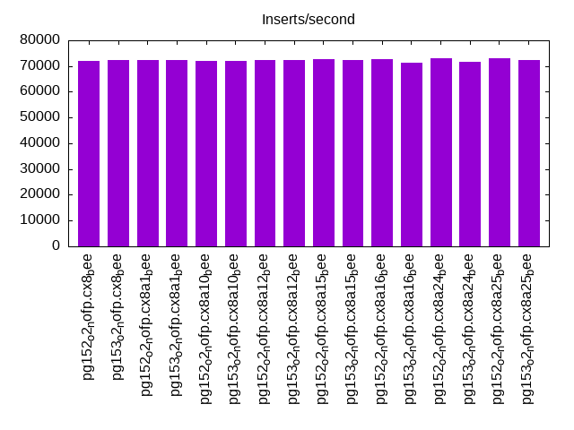
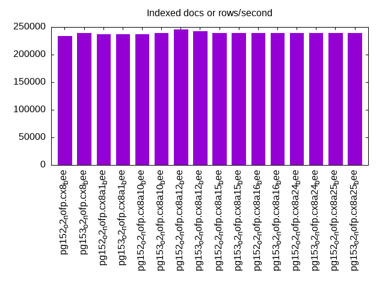
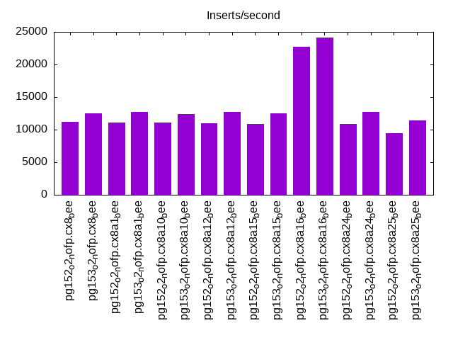
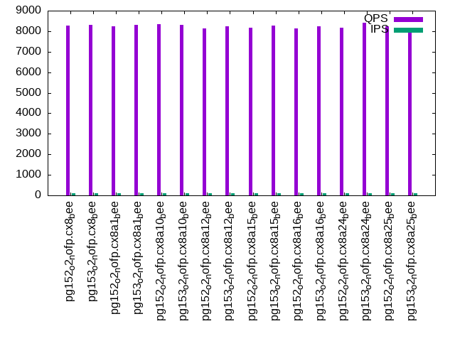
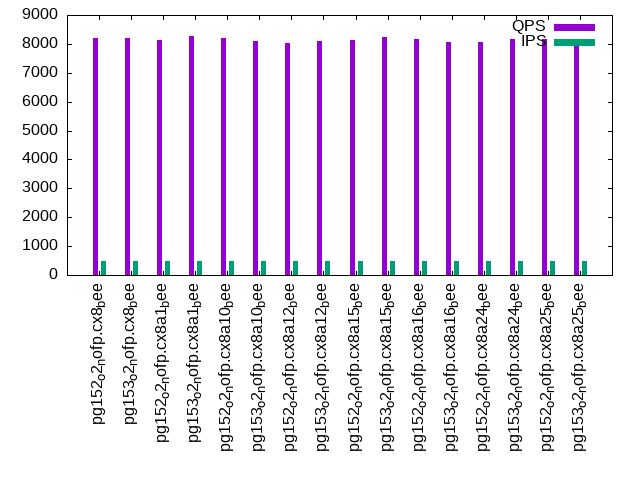
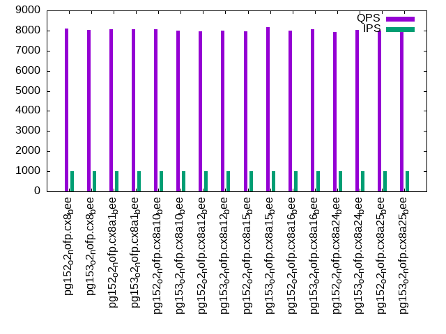

This is a report for the insert benchmark with 20M docs and 1 client(s). It is generated by scripts (bash, awk, sed) and Tufte might not be impressed. An overview of the insert benchmark is here and a short update is here. Below, by DBMS, I mean DBMS+version.config. An example is my8020.c10b40 where my means MySQL, 8020 is version 8.0.20 and c10b40 is the name for the configuration file.
The test server has 8 AMD cores, 16G RAM and an NVMe SSD. It is described here as the Beelink. The benchmark was run with 1 client and there were 1 or 3 connections per client (1 for queries or inserts without rate limits, 1+1 for rate limited inserts+deletes). It uses 1 table. It loads 20M rows per table without secondary indexes, creates secondary indexes, then inserts 200M rows per table with a delete per insert to avoid growing the table. It then does 3 read+write tests for 7200s each that do queries as fast as possible with 100, 500 and then 1000 inserts/second/client concurrent with the queries and 1000 deletes/second to avoid growing the table. The database is cached by Postgres. Clients and the DBMS share one server. The per-database configs are in the per-database subdirectories here.
The tested DBMS are:
The numbers are inserts/s for l.i0 and l.i1, indexed docs (or rows) /s for l.x and queries/s for q*.2. The values are the average rate over the entire test for inserts (IPS) and queries (QPS). The range of values for IPS and QPS is split into 3 parts: bottom 25%, middle 50%, top 25%. Values in the bottom 25% have a red background, values in the top 25% have a green background and values in the middle have no color. A gray background is used for values that can be ignored because the DBMS did not sustain the target insert rate. Red backgrounds are not used when the minimum value is within 80% of the max value.
| dbms | l.i0 | l.x | l.i1 | q100.1 | q500.1 | q1000.1 |
|---|---|---|---|---|---|---|
| pg152_o2_nofp.cx8_bee | 71942 | 233721 | 11168 | 8273 | 8220 | 8114 |
| pg153_o2_nofp.cx8_bee | 72202 | 239286 | 12531 | 8309 | 8211 | 8034 |
| pg152_o2_nofp.cx8a1_bee | 72202 | 236470 | 11064 | 8230 | 8124 | 8074 |
| pg153_o2_nofp.cx8a1_bee | 72464 | 236470 | 12706 | 8305 | 8266 | 8072 |
| pg152_o2_nofp.cx8a10_bee | 71942 | 236470 | 11112 | 8341 | 8188 | 8050 |
| pg153_o2_nofp.cx8a10_bee | 71942 | 239286 | 12423 | 8304 | 8092 | 7991 |
| pg152_o2_nofp.cx8a12_bee | 72202 | 245122 | 10979 | 8138 | 8042 | 7964 |
| pg153_o2_nofp.cx8a12_bee | 72202 | 242169 | 12723 | 8248 | 8100 | 7981 |
| pg152_o2_nofp.cx8a15_bee | 72727 | 239286 | 10900 | 8171 | 8130 | 7971 |
| pg153_o2_nofp.cx8a15_bee | 72464 | 239286 | 12524 | 8260 | 8223 | 8158 |
| pg152_o2_nofp.cx8a16_bee | 72727 | 239286 | 22763 | 8122 | 8155 | 8001 |
| pg153_o2_nofp.cx8a16_bee | 71174 | 239286 | 24163 | 8239 | 8070 | 8068 |
| pg152_o2_nofp.cx8a24_bee | 72993 | 239286 | 10916 | 8184 | 8078 | 7939 |
| pg153_o2_nofp.cx8a24_bee | 71684 | 239286 | 12686 | 8418 | 8174 | 8040 |
| pg152_o2_nofp.cx8a25_bee | 72993 | 239286 | 9496 | 8226 | 8174 | 8000 |
| pg153_o2_nofp.cx8a25_bee | 72464 | 239286 | 11421 | 8119 | 7914 | 8024 |
This table has relative throughput, throughput for the DBMS relative to the DBMS in the first line, using the absolute throughput from the previous table. Values less than 0.95 have a yellow background. Values greater than 1.05 have a blue background.
| dbms | l.i0 | l.x | l.i1 | q100.1 | q500.1 | q1000.1 |
|---|---|---|---|---|---|---|
| pg152_o2_nofp.cx8_bee | 1.00 | 1.00 | 1.00 | 1.00 | 1.00 | 1.00 |
| pg153_o2_nofp.cx8_bee | 1.00 | 1.02 | 1.12 | 1.00 | 1.00 | 0.99 |
| pg152_o2_nofp.cx8a1_bee | 1.00 | 1.01 | 0.99 | 0.99 | 0.99 | 1.00 |
| pg153_o2_nofp.cx8a1_bee | 1.01 | 1.01 | 1.14 | 1.00 | 1.01 | 0.99 |
| pg152_o2_nofp.cx8a10_bee | 1.00 | 1.01 | 0.99 | 1.01 | 1.00 | 0.99 |
| pg153_o2_nofp.cx8a10_bee | 1.00 | 1.02 | 1.11 | 1.00 | 0.98 | 0.98 |
| pg152_o2_nofp.cx8a12_bee | 1.00 | 1.05 | 0.98 | 0.98 | 0.98 | 0.98 |
| pg153_o2_nofp.cx8a12_bee | 1.00 | 1.04 | 1.14 | 1.00 | 0.99 | 0.98 |
| pg152_o2_nofp.cx8a15_bee | 1.01 | 1.02 | 0.98 | 0.99 | 0.99 | 0.98 |
| pg153_o2_nofp.cx8a15_bee | 1.01 | 1.02 | 1.12 | 1.00 | 1.00 | 1.01 |
| pg152_o2_nofp.cx8a16_bee | 1.01 | 1.02 | 2.04 | 0.98 | 0.99 | 0.99 |
| pg153_o2_nofp.cx8a16_bee | 0.99 | 1.02 | 2.16 | 1.00 | 0.98 | 0.99 |
| pg152_o2_nofp.cx8a24_bee | 1.01 | 1.02 | 0.98 | 0.99 | 0.98 | 0.98 |
| pg153_o2_nofp.cx8a24_bee | 1.00 | 1.02 | 1.14 | 1.02 | 0.99 | 0.99 |
| pg152_o2_nofp.cx8a25_bee | 1.01 | 1.02 | 0.85 | 0.99 | 0.99 | 0.99 |
| pg153_o2_nofp.cx8a25_bee | 1.01 | 1.02 | 1.02 | 0.98 | 0.96 | 0.99 |
This lists the average rate of inserts/s for the tests that do inserts concurrent with queries. For such tests the query rate is listed in the table above. The read+write tests are setup so that the insert rate should match the target rate every second. Cells that are not at least 95% of the target have a red background to indicate a failure to satisfy the target.
| dbms | q100.1 | q500.1 | q1000.1 |
|---|---|---|---|
| pg152_o2_nofp.cx8_bee | 100 | 499 | 999 |
| pg153_o2_nofp.cx8_bee | 100 | 499 | 999 |
| pg152_o2_nofp.cx8a1_bee | 100 | 499 | 999 |
| pg153_o2_nofp.cx8a1_bee | 100 | 499 | 999 |
| pg152_o2_nofp.cx8a10_bee | 100 | 499 | 999 |
| pg153_o2_nofp.cx8a10_bee | 100 | 499 | 999 |
| pg152_o2_nofp.cx8a12_bee | 100 | 499 | 999 |
| pg153_o2_nofp.cx8a12_bee | 100 | 499 | 999 |
| pg152_o2_nofp.cx8a15_bee | 100 | 499 | 999 |
| pg153_o2_nofp.cx8a15_bee | 100 | 499 | 999 |
| pg152_o2_nofp.cx8a16_bee | 100 | 499 | 999 |
| pg153_o2_nofp.cx8a16_bee | 100 | 499 | 999 |
| pg152_o2_nofp.cx8a24_bee | 100 | 499 | 999 |
| pg153_o2_nofp.cx8a24_bee | 100 | 499 | 999 |
| pg152_o2_nofp.cx8a25_bee | 100 | 499 | 999 |
| pg153_o2_nofp.cx8a25_bee | 100 | 499 | 999 |
| target | 100 | 500 | 1000 |
l.i0: load without secondary indexes. Graphs for performance per 1-second interval are here.
Average throughput:
Insert response time histogram: each cell has the percentage of responses that take <= the time in the header and max is the max response time in seconds. For the max column values in the top 25% of the range have a red background and in the bottom 25% of the range have a green background. The red background is not used when the min value is within 80% of the max value.
| dbms | 256us | 1ms | 4ms | 16ms | 64ms | 256ms | 1s | 4s | 16s | gt | max |
|---|---|---|---|---|---|---|---|---|---|---|---|
| pg152_o2_nofp.cx8_bee | 100.000 | 0.003 | |||||||||
| pg153_o2_nofp.cx8_bee | 100.000 | 0.004 | |||||||||
| pg152_o2_nofp.cx8a1_bee | 100.000 | 0.003 | |||||||||
| pg153_o2_nofp.cx8a1_bee | 100.000 | 0.003 | |||||||||
| pg152_o2_nofp.cx8a10_bee | 100.000 | 0.003 | |||||||||
| pg153_o2_nofp.cx8a10_bee | 100.000 | 0.003 | |||||||||
| pg152_o2_nofp.cx8a12_bee | 100.000 | 0.003 | |||||||||
| pg153_o2_nofp.cx8a12_bee | 100.000 | 0.003 | |||||||||
| pg152_o2_nofp.cx8a15_bee | 100.000 | 0.003 | |||||||||
| pg153_o2_nofp.cx8a15_bee | 100.000 | 0.003 | |||||||||
| pg152_o2_nofp.cx8a16_bee | 100.000 | 0.003 | |||||||||
| pg153_o2_nofp.cx8a16_bee | 100.000 | 0.003 | |||||||||
| pg152_o2_nofp.cx8a24_bee | 100.000 | 0.003 | |||||||||
| pg153_o2_nofp.cx8a24_bee | 100.000 | 0.003 | |||||||||
| pg152_o2_nofp.cx8a25_bee | 99.999 | 0.001 | 0.004 | ||||||||
| pg153_o2_nofp.cx8a25_bee | 100.000 | 0.003 |
Performance metrics for the DBMS listed above. Some are normalized by throughput, others are not. Legend for results is here.
ips qps rps rmbps wps wmbps rpq rkbpq wpi wkbpi csps cpups cspq cpupq dbgb1 dbgb2 rss maxop p50 p99 tag 71942 0 0 0.0 83.6 30.5 0.000 0.000 0.001 0.433 8923 23.3 0.124 26 1.9 5.2 1.9 0.003 72417 70819 20m.pg152_o2_nofp.cx8_bee 72202 0 0 0.0 83.6 30.4 0.000 0.000 0.001 0.431 8892 23.3 0.123 26 1.9 5.2 1.5 0.004 72313 71020 20m.pg153_o2_nofp.cx8_bee 72202 0 0 0.0 84.3 30.6 0.000 0.000 0.001 0.434 8953 23.1 0.124 26 1.9 5.2 0.2 0.003 72557 71385 20m.pg152_o2_nofp.cx8a1_bee 72464 0 0 0.0 84.8 30.7 0.000 0.000 0.001 0.434 9006 23.2 0.124 26 1.9 5.2 1.9 0.003 72917 70921 20m.pg153_o2_nofp.cx8a1_bee 71942 0 0 0.0 83.2 30.5 0.000 0.000 0.001 0.433 8941 23.2 0.124 26 1.9 5.2 1.9 0.003 72418 70619 20m.pg152_o2_nofp.cx8a10_bee 71942 0 0 0.0 83.6 30.3 0.000 0.000 0.001 0.432 8886 23.2 0.124 26 1.9 5.2 0.2 0.003 72218 69921 20m.pg153_o2_nofp.cx8a10_bee 72202 0 0 0.0 84.1 30.5 0.000 0.000 0.001 0.432 8906 23.2 0.123 26 1.9 5.2 0.3 0.003 72417 70520 20m.pg152_o2_nofp.cx8a12_bee 72202 0 0 0.0 84.3 30.5 0.000 0.000 0.001 0.432 8938 22.9 0.124 25 1.9 5.2 2.0 0.003 72518 71122 20m.pg153_o2_nofp.cx8a12_bee 72727 0 0 0.0 85.3 30.8 0.000 0.000 0.001 0.434 8987 23.5 0.124 26 1.9 5.2 1.9 0.003 73316 71719 20m.pg152_o2_nofp.cx8a15_bee 72464 0 0 0.0 84.2 30.5 0.000 0.000 0.001 0.431 8935 23.3 0.123 26 1.9 5.2 0.2 0.003 72617 71416 20m.pg153_o2_nofp.cx8a15_bee 72727 0 0 0.0 84.5 30.6 0.000 0.000 0.001 0.431 8952 23.2 0.123 26 1.9 5.2 0.2 0.003 72720 71621 20m.pg152_o2_nofp.cx8a16_bee 71174 0 0 0.0 82.9 30.0 0.000 0.000 0.001 0.431 8807 23.4 0.124 26 1.9 5.2 1.5 0.003 71221 69523 20m.pg153_o2_nofp.cx8a16_bee 72993 0 0 0.0 85.5 30.8 0.000 0.000 0.001 0.432 9007 23.4 0.123 26 1.9 5.2 0.2 0.003 73117 71920 20m.pg152_o2_nofp.cx8a24_bee 71684 0 0 0.0 84.3 30.3 0.000 0.000 0.001 0.433 8854 23.2 0.124 26 1.9 5.2 1.5 0.003 72118 70020 20m.pg153_o2_nofp.cx8a24_bee 72993 0 0 0.0 84.9 30.8 0.000 0.000 0.001 0.432 9042 23.4 0.124 26 1.9 5.2 0.2 0.004 73116 71221 20m.pg152_o2_nofp.cx8a25_bee 72464 0 0 0.0 83.6 30.5 0.000 0.000 0.001 0.431 8917 23.2 0.123 26 1.9 5.2 0.2 0.003 72517 71317 20m.pg153_o2_nofp.cx8a25_bee
l.x: create secondary indexes.
Average throughput:
Performance metrics for the DBMS listed above. Some are normalized by throughput, others are not. Legend for results is here.
ips qps rps rmbps wps wmbps rpq rkbpq wpi wkbpi csps cpups cspq cpupq dbgb1 dbgb2 rss maxop p50 p99 tag 233721 0 0 0.0 133.7 62.9 0.000 0.000 0.001 0.275 692 12.3 0.003 4 3.7 8.6 2.1 0.003 NA NA 20m.pg152_o2_nofp.cx8_bee 239286 0 0 0.0 98.6 46.2 0.000 0.000 0.000 0.198 740 12.5 0.003 4 3.7 8.6 2.1 0.003 NA NA 20m.pg153_o2_nofp.cx8_bee 236470 0 0 0.0 114.2 54.4 0.000 0.000 0.000 0.235 635 12.7 0.003 4 3.7 8.0 2.1 0.003 NA NA 20m.pg152_o2_nofp.cx8a1_bee 236470 0 0 0.0 74.0 34.6 0.000 0.000 0.000 0.150 668 12.8 0.003 4 3.7 8.0 2.1 0.003 NA NA 20m.pg153_o2_nofp.cx8a1_bee 236470 0 0 0.0 98.4 45.8 0.000 0.000 0.000 0.198 718 12.8 0.003 4 3.7 8.6 0.2 0.003 NA NA 20m.pg152_o2_nofp.cx8a10_bee 239286 0 0 0.0 100.2 46.7 0.000 0.000 0.000 0.200 705 12.6 0.003 4 3.7 8.6 2.1 0.003 NA NA 20m.pg153_o2_nofp.cx8a10_bee 245122 0 0 0.0 104.6 48.6 0.000 0.000 0.000 0.203 708 12.9 0.003 4 3.7 8.6 2.1 0.003 NA NA 20m.pg152_o2_nofp.cx8a12_bee 242169 0 0 0.0 105.8 49.2 0.000 0.000 0.000 0.208 698 12.7 0.003 4 3.7 8.6 2.1 0.003 NA NA 20m.pg153_o2_nofp.cx8a12_bee 239286 0 0 0.0 97.2 45.5 0.000 0.000 0.000 0.195 782 12.5 0.003 4 3.7 8.6 2.1 0.003 NA NA 20m.pg152_o2_nofp.cx8a15_bee 239286 0 0 0.0 99.2 46.1 0.000 0.000 0.000 0.197 790 12.5 0.003 4 3.7 8.6 2.1 0.003 NA NA 20m.pg153_o2_nofp.cx8a15_bee 239286 0 0 0.0 97.0 45.5 0.000 0.000 0.000 0.195 775 12.5 0.003 4 3.7 8.6 2.1 0.003 NA NA 20m.pg152_o2_nofp.cx8a16_bee 239286 0 0 0.0 94.5 44.2 0.000 0.000 0.000 0.189 754 12.5 0.003 4 3.7 8.6 2.1 0.003 NA NA 20m.pg153_o2_nofp.cx8a16_bee 239286 0 0 0.0 92.7 43.4 0.000 0.000 0.000 0.186 698 12.4 0.003 4 3.7 8.6 2.1 0.003 NA NA 20m.pg152_o2_nofp.cx8a24_bee 239286 0 0 0.0 99.0 46.5 0.000 0.000 0.000 0.199 791 12.5 0.003 4 3.7 8.6 2.1 0.003 NA NA 20m.pg153_o2_nofp.cx8a24_bee 239286 0 0 0.0 96.4 45.1 0.000 0.000 0.000 0.193 805 12.5 0.003 4 3.7 8.6 2.1 0.003 NA NA 20m.pg152_o2_nofp.cx8a25_bee 239286 0 0 0.0 100.2 46.9 0.000 0.000 0.000 0.201 855 12.6 0.004 4 3.7 8.6 2.1 0.003 NA NA 20m.pg153_o2_nofp.cx8a25_bee
l.i1: continue load after secondary indexes created. Graphs for performance per 1-second interval are here.
Average throughput:
Insert response time histogram: each cell has the percentage of responses that take <= the time in the header and max is the max response time in seconds. For the max column values in the top 25% of the range have a red background and in the bottom 25% of the range have a green background. The red background is not used when the min value is within 80% of the max value.
| dbms | 256us | 1ms | 4ms | 16ms | 64ms | 256ms | 1s | 4s | 16s | gt | max |
|---|---|---|---|---|---|---|---|---|---|---|---|
| pg152_o2_nofp.cx8_bee | 99.999 | 0.001 | nonzero | 0.030 | |||||||
| pg153_o2_nofp.cx8_bee | 100.000 | nonzero | nonzero | 0.024 | |||||||
| pg152_o2_nofp.cx8a1_bee | 99.805 | 0.195 | nonzero | 0.025 | |||||||
| pg153_o2_nofp.cx8a1_bee | 99.804 | 0.196 | nonzero | 0.031 | |||||||
| pg152_o2_nofp.cx8a10_bee | 99.999 | 0.001 | nonzero | 0.033 | |||||||
| pg153_o2_nofp.cx8a10_bee | 99.998 | 0.001 | nonzero | 0.024 | |||||||
| pg152_o2_nofp.cx8a12_bee | 99.999 | 0.001 | nonzero | 0.024 | |||||||
| pg153_o2_nofp.cx8a12_bee | 99.999 | nonzero | nonzero | 0.025 | |||||||
| pg152_o2_nofp.cx8a15_bee | 99.995 | 0.005 | nonzero | 0.031 | |||||||
| pg153_o2_nofp.cx8a15_bee | 99.996 | 0.003 | nonzero | 0.031 | |||||||
| pg152_o2_nofp.cx8a16_bee | 99.997 | 0.002 | 0.001 | 0.054 | |||||||
| pg153_o2_nofp.cx8a16_bee | 99.999 | 0.001 | nonzero | 0.044 | |||||||
| pg152_o2_nofp.cx8a24_bee | 99.999 | 0.001 | nonzero | 0.039 | |||||||
| pg153_o2_nofp.cx8a24_bee | 99.998 | 0.002 | nonzero | 0.029 | |||||||
| pg152_o2_nofp.cx8a25_bee | 99.995 | 0.005 | nonzero | 0.029 | |||||||
| pg153_o2_nofp.cx8a25_bee | 99.995 | 0.004 | 0.001 | 0.040 |
Delete response time histogram: each cell has the percentage of responses that take <= the time in the header and max is the max response time in seconds. For the max column values in the top 25% of the range have a red background and in the bottom 25% of the range have a green background. The red background is not used when the min value is within 80% of the max value.
| dbms | 256us | 1ms | 4ms | 16ms | 64ms | 256ms | 1s | 4s | 16s | gt | max |
|---|---|---|---|---|---|---|---|---|---|---|---|
| pg152_o2_nofp.cx8_bee | 0.085 | 84.414 | 0.870 | 4.873 | 9.757 | 0.051 | |||||
| pg153_o2_nofp.cx8_bee | 0.076 | 84.584 | 0.806 | 6.882 | 7.652 | 0.044 | |||||
| pg152_o2_nofp.cx8a1_bee | 0.069 | 84.486 | 0.806 | 4.908 | 9.732 | 0.050 | |||||
| pg153_o2_nofp.cx8a1_bee | 0.073 | 84.796 | 0.898 | 6.783 | 7.449 | 0.042 | |||||
| pg152_o2_nofp.cx8a10_bee | 0.078 | 84.455 | 1.066 | 4.819 | 9.582 | 0.050 | |||||
| pg153_o2_nofp.cx8a10_bee | 0.088 | 84.858 | 0.459 | 6.760 | 7.835 | 0.043 | |||||
| pg152_o2_nofp.cx8a12_bee | 0.083 | 84.287 | 0.848 | 4.840 | 9.942 | 0.051 | |||||
| pg153_o2_nofp.cx8a12_bee | 0.085 | 85.182 | 0.522 | 6.852 | 7.360 | 0.040 | |||||
| pg152_o2_nofp.cx8a15_bee | 0.082 | 84.534 | 0.751 | 4.707 | 9.925 | 0.055 | |||||
| pg153_o2_nofp.cx8a15_bee | 0.079 | 84.811 | 0.767 | 6.546 | 7.797 | 0.045 | |||||
| pg152_o2_nofp.cx8a16_bee | 0.102 | 83.434 | 3.377 | 13.087 | nonzero | 0.022 | |||||
| pg153_o2_nofp.cx8a16_bee | 0.105 | 84.405 | 9.044 | 6.446 | nonzero | 0.043 | |||||
| pg152_o2_nofp.cx8a24_bee | 0.082 | 84.222 | 0.803 | 4.847 | 10.045 | 0.050 | |||||
| pg153_o2_nofp.cx8a24_bee | 0.076 | 84.824 | 0.725 | 7.174 | 7.201 | 0.054 | |||||
| pg152_o2_nofp.cx8a25_bee | 0.059 | 86.328 | 0.531 | 1.410 | 11.670 | 0.002 | 0.139 | ||||
| pg153_o2_nofp.cx8a25_bee | 0.060 | 87.602 | 0.819 | 1.982 | 9.536 | 0.002 | 0.140 |
Performance metrics for the DBMS listed above. Some are normalized by throughput, others are not. Legend for results is here.
ips qps rps rmbps wps wmbps rpq rkbpq wpi wkbpi csps cpups cspq cpupq dbgb1 dbgb2 rss maxop p50 p99 tag 11168 0 0 0.0 51.8 11.8 0.000 0.000 0.005 1.081 5425 17.3 0.486 124 6.1 32.7 6.1 0.030 2647 1198 20m.pg152_o2_nofp.cx8_bee 12531 0 0 0.0 51.9 12.8 0.000 0.000 0.004 1.046 6076 18.0 0.485 115 6.1 34.6 6.1 0.024 3299 1498 20m.pg153_o2_nofp.cx8_bee 11064 0 0 0.0 46.8 10.7 0.000 0.000 0.004 0.987 5385 17.3 0.487 125 6.1 28.6 6.1 0.025 2647 1199 20m.pg152_o2_nofp.cx8a1_bee 12706 0 0 0.0 49.6 11.8 0.000 0.000 0.004 0.951 6160 18.2 0.485 115 6.1 31.5 6.1 0.031 3346 1448 20m.pg153_o2_nofp.cx8a1_bee 11112 0 0 0.0 49.7 11.6 0.000 0.000 0.004 1.073 5408 17.3 0.487 125 6.1 31.2 6.1 0.033 2647 1199 20m.pg152_o2_nofp.cx8a10_bee 12423 0 0 0.0 52.5 12.7 0.000 0.000 0.004 1.046 6033 18.0 0.486 116 6.1 34.6 6.1 0.024 3246 1498 20m.pg153_o2_nofp.cx8a10_bee 10979 0 0 0.0 49.7 11.6 0.000 0.000 0.005 1.086 5343 17.2 0.487 125 6.1 32.4 6.1 0.024 2647 1199 20m.pg152_o2_nofp.cx8a12_bee 12723 0 0 0.0 53.5 12.8 0.000 0.000 0.004 1.029 6167 18.1 0.485 114 6.1 34.7 6.2 0.025 3396 1498 20m.pg153_o2_nofp.cx8a12_bee 10900 0 0 0.0 116.5 18.6 0.000 0.000 0.011 1.748 5320 17.3 0.488 127 6.1 16.1 6.1 0.031 2597 1149 20m.pg152_o2_nofp.cx8a15_bee 12524 0 0 0.0 131.5 21.5 0.000 0.000 0.010 1.759 6083 18.2 0.486 116 6.1 16.1 6.1 0.031 3296 1498 20m.pg153_o2_nofp.cx8a15_bee 22763 0 0 0.0 70.0 19.6 0.000 0.000 0.003 0.880 10959 23.3 0.481 82 5.1 45.1 4.7 0.054 29118 8441 20m.pg152_o2_nofp.cx8a16_bee 24163 0 0 0.0 74.3 20.8 0.000 0.000 0.003 0.879 11605 24.0 0.480 79 5.1 45.1 5.1 0.044 29167 7397 20m.pg153_o2_nofp.cx8a16_bee 10916 0 0 0.0 49.1 11.5 0.000 0.000 0.004 1.083 5310 17.2 0.486 126 6.1 31.7 6.1 0.039 2647 1199 20m.pg152_o2_nofp.cx8a24_bee 12686 0 0 0.0 52.3 12.7 0.000 0.000 0.004 1.027 6148 18.2 0.485 115 6.1 34.0 6.1 0.029 3396 1448 20m.pg153_o2_nofp.cx8a24_bee 9496 0 43 0.3 5445.7 53.9 0.005 0.034 0.573 5.813 4942 18.3 0.520 154 6.2 29.4 2.6 0.029 1848 1149 20m.pg152_o2_nofp.cx8a25_bee 11421 0 48 0.3 6346.3 63.2 0.004 0.031 0.556 5.664 5878 19.3 0.515 135 6.2 33.7 2.6 0.040 2747 1350 20m.pg153_o2_nofp.cx8a25_bee
q100.1: range queries with 100 insert/s per client. Graphs for performance per 1-second interval are here.
Average throughput:
Query response time histogram: each cell has the percentage of responses that take <= the time in the header and max is the max response time in seconds. For max values in the top 25% of the range have a red background and in the bottom 25% of the range have a green background. The red background is not used when the min value is within 80% of the max value.
| dbms | 256us | 1ms | 4ms | 16ms | 64ms | 256ms | 1s | 4s | 16s | gt | max |
|---|---|---|---|---|---|---|---|---|---|---|---|
| pg152_o2_nofp.cx8_bee | 99.942 | 0.058 | nonzero | nonzero | 0.004 | ||||||
| pg153_o2_nofp.cx8_bee | 99.943 | 0.057 | nonzero | nonzero | 0.005 | ||||||
| pg152_o2_nofp.cx8a1_bee | 99.946 | 0.054 | nonzero | nonzero | 0.006 | ||||||
| pg153_o2_nofp.cx8a1_bee | 99.954 | 0.046 | nonzero | 0.004 | |||||||
| pg152_o2_nofp.cx8a10_bee | 99.942 | 0.058 | nonzero | nonzero | 0.005 | ||||||
| pg153_o2_nofp.cx8a10_bee | 99.943 | 0.057 | nonzero | nonzero | 0.004 | ||||||
| pg152_o2_nofp.cx8a12_bee | 99.936 | 0.064 | nonzero | 0.003 | |||||||
| pg153_o2_nofp.cx8a12_bee | 99.948 | 0.051 | nonzero | nonzero | 0.005 | ||||||
| pg152_o2_nofp.cx8a15_bee | 99.935 | 0.064 | nonzero | nonzero | 0.006 | ||||||
| pg153_o2_nofp.cx8a15_bee | 99.944 | 0.056 | nonzero | nonzero | 0.004 | ||||||
| pg152_o2_nofp.cx8a16_bee | 99.942 | 0.058 | nonzero | 0.004 | |||||||
| pg153_o2_nofp.cx8a16_bee | 99.932 | 0.068 | nonzero | 0.003 | |||||||
| pg152_o2_nofp.cx8a24_bee | 99.939 | 0.061 | nonzero | nonzero | 0.006 | ||||||
| pg153_o2_nofp.cx8a24_bee | 99.955 | 0.045 | nonzero | 0.003 | |||||||
| pg152_o2_nofp.cx8a25_bee | 99.939 | 0.060 | nonzero | nonzero | 0.010 | ||||||
| pg153_o2_nofp.cx8a25_bee | 99.934 | 0.066 | nonzero | nonzero | 0.007 |
Insert response time histogram: each cell has the percentage of responses that take <= the time in the header and max is the max response time in seconds. For max values in the top 25% of the range have a red background and in the bottom 25% of the range have a green background. The red background is not used when the min value is within 80% of the max value.
| dbms | 256us | 1ms | 4ms | 16ms | 64ms | 256ms | 1s | 4s | 16s | gt | max |
|---|---|---|---|---|---|---|---|---|---|---|---|
| pg152_o2_nofp.cx8_bee | 99.965 | 0.035 | 0.007 | ||||||||
| pg153_o2_nofp.cx8_bee | 99.972 | 0.028 | 0.007 | ||||||||
| pg152_o2_nofp.cx8a1_bee | 70.618 | 29.382 | 0.006 | ||||||||
| pg153_o2_nofp.cx8a1_bee | 68.292 | 31.708 | 0.007 | ||||||||
| pg152_o2_nofp.cx8a10_bee | 99.944 | 0.056 | 0.006 | ||||||||
| pg153_o2_nofp.cx8a10_bee | 99.972 | 0.028 | 0.006 | ||||||||
| pg152_o2_nofp.cx8a12_bee | 99.938 | 0.062 | 0.007 | ||||||||
| pg153_o2_nofp.cx8a12_bee | 99.944 | 0.056 | 0.006 | ||||||||
| pg152_o2_nofp.cx8a15_bee | 99.951 | 0.049 | 0.006 | ||||||||
| pg153_o2_nofp.cx8a15_bee | 99.972 | 0.028 | 0.006 | ||||||||
| pg152_o2_nofp.cx8a16_bee | 99.944 | 0.056 | 0.007 | ||||||||
| pg153_o2_nofp.cx8a16_bee | 99.958 | 0.042 | 0.006 | ||||||||
| pg152_o2_nofp.cx8a24_bee | 99.965 | 0.035 | 0.006 | ||||||||
| pg153_o2_nofp.cx8a24_bee | 99.931 | 0.069 | 0.006 | ||||||||
| pg152_o2_nofp.cx8a25_bee | 99.972 | 0.028 | 0.005 | ||||||||
| pg153_o2_nofp.cx8a25_bee | 99.938 | 0.062 | 0.012 |
Delete response time histogram: each cell has the percentage of responses that take <= the time in the header and max is the max response time in seconds. For max values in the top 25% of the range have a red background and in the bottom 25% of the range have a green background. The red background is not used when the min value is within 80% of the max value.
| dbms | 256us | 1ms | 4ms | 16ms | 64ms | 256ms | 1s | 4s | 16s | gt | max |
|---|---|---|---|---|---|---|---|---|---|---|---|
| pg152_o2_nofp.cx8_bee | 0.903 | 71.153 | 0.021 | 27.924 | 0.011 | ||||||
| pg153_o2_nofp.cx8_bee | 0.757 | 81.306 | 17.931 | 0.007 | 0.004 | ||||||
| pg152_o2_nofp.cx8a1_bee | 0.528 | 70.222 | 0.021 | 29.229 | 0.012 | ||||||
| pg153_o2_nofp.cx8a1_bee | 0.431 | 98.667 | 0.903 | 0.002 | |||||||
| pg152_o2_nofp.cx8a10_bee | 1.146 | 73.250 | 25.576 | 0.028 | 0.005 | ||||||
| pg153_o2_nofp.cx8a10_bee | 0.812 | 87.097 | 0.028 | 12.062 | 0.012 | ||||||
| pg152_o2_nofp.cx8a12_bee | 0.667 | 75.764 | 23.542 | 0.028 | 0.005 | ||||||
| pg153_o2_nofp.cx8a12_bee | 0.542 | 77.438 | 21.986 | 0.035 | 0.007 | ||||||
| pg152_o2_nofp.cx8a15_bee | 0.979 | 68.542 | 0.062 | 30.417 | 0.010 | ||||||
| pg153_o2_nofp.cx8a15_bee | 1.076 | 98.903 | 0.021 | 0.003 | |||||||
| pg152_o2_nofp.cx8a16_bee | 0.965 | 70.681 | 0.826 | 27.528 | 0.008 | ||||||
| pg153_o2_nofp.cx8a16_bee | 0.819 | 68.569 | 28.965 | 1.646 | 0.006 | ||||||
| pg152_o2_nofp.cx8a24_bee | 1.194 | 69.389 | 14.667 | 14.750 | 0.008 | ||||||
| pg153_o2_nofp.cx8a24_bee | 0.507 | 77.778 | 21.688 | 0.028 | 0.005 | ||||||
| pg152_o2_nofp.cx8a25_bee | 0.278 | 68.472 | 0.215 | 30.875 | 0.160 | 0.020 | |||||
| pg153_o2_nofp.cx8a25_bee | 0.486 | 68.792 | 0.201 | 30.326 | 0.194 | 0.019 |
Performance metrics for the DBMS listed above. Some are normalized by throughput, others are not. Legend for results is here.
ips qps rps rmbps wps wmbps rpq rkbpq wpi wkbpi csps cpups cspq cpupq dbgb1 dbgb2 rss maxop p50 p99 tag 100 8273 0 0.0 62.7 2.2 0.000 0.000 0.628 23.006 31874 13.2 3.853 128 6.1 29.7 3.7 0.004 7927 7799 20m.pg152_o2_nofp.cx8_bee 100 8309 0 0.0 59.9 2.2 0.000 0.000 0.601 22.563 32008 13.3 3.852 128 6.1 31.9 4.3 0.005 7925 7797 20m.pg153_o2_nofp.cx8_bee 100 8230 0 0.0 63.1 2.0 0.000 0.000 0.632 20.750 31708 13.2 3.853 128 6.1 26.8 4.3 0.006 7895 7766 20m.pg152_o2_nofp.cx8a1_bee 100 8305 0 0.0 58.8 2.2 0.000 0.000 0.589 22.278 32062 13.3 3.861 128 6.1 29.3 4.1 0.004 7973 7861 20m.pg153_o2_nofp.cx8a1_bee 100 8341 0 0.0 61.4 2.2 0.000 0.000 0.615 23.078 32133 13.3 3.853 128 6.1 28.5 3.7 0.005 7959 7829 20m.pg152_o2_nofp.cx8a10_bee 100 8304 0 0.0 61.9 2.3 0.000 0.000 0.620 23.133 31989 13.3 3.852 128 6.1 31.9 3.8 0.004 7893 7764 20m.pg153_o2_nofp.cx8a10_bee 100 8138 0 0.0 63.8 2.2 0.000 0.000 0.640 23.067 31364 13.2 3.854 130 6.1 29.5 3.7 0.003 7813 7685 20m.pg152_o2_nofp.cx8a12_bee 100 8248 0 0.0 60.5 2.4 0.000 0.000 0.607 24.894 31779 13.3 3.853 129 6.1 31.8 4.2 0.005 7910 7796 20m.pg153_o2_nofp.cx8a12_bee 100 8171 0 0.0 54.5 2.0 0.000 0.000 0.546 20.043 31475 13.2 3.852 129 6.1 16.1 3.6 0.006 7815 7692 20m.pg152_o2_nofp.cx8a15_bee 100 8260 0 0.0 54.6 1.9 0.000 0.000 0.547 19.947 31811 13.0 3.851 126 6.1 16.1 3.7 0.004 7941 7813 20m.pg153_o2_nofp.cx8a15_bee 100 8122 0 0.0 51.9 2.1 0.000 0.000 0.520 21.378 31286 13.2 3.852 130 5.1 42.3 3.0 0.004 7686 7559 20m.pg152_o2_nofp.cx8a16_bee 100 8239 0 0.0 52.6 2.1 0.000 0.000 0.527 21.141 31745 13.2 3.853 128 5.1 42.3 3.4 0.003 7861 7734 20m.pg153_o2_nofp.cx8a16_bee 100 8184 0 0.0 62.8 2.2 0.000 0.000 0.629 23.028 31532 13.3 3.853 130 6.1 29.1 4.2 0.006 7799 7700 20m.pg152_o2_nofp.cx8a24_bee 100 8418 0 0.0 59.5 2.4 0.000 0.000 0.597 25.062 32431 13.4 3.853 127 6.1 31.3 4.1 0.003 8007 7877 20m.pg153_o2_nofp.cx8a24_bee 100 8226 1 0.0 161.8 2.5 0.000 0.001 1.621 25.447 31709 13.1 3.854 127 6.2 26.2 2.6 0.010 7895 7733 20m.pg152_o2_nofp.cx8a25_bee 100 8119 1 0.0 157.3 2.4 0.000 0.001 1.576 25.013 31298 13.2 3.855 130 6.2 30.2 2.6 0.007 7781 7637 20m.pg153_o2_nofp.cx8a25_bee
q500.1: range queries with 500 insert/s per client. Graphs for performance per 1-second interval are here.
Average throughput:
Query response time histogram: each cell has the percentage of responses that take <= the time in the header and max is the max response time in seconds. For max values in the top 25% of the range have a red background and in the bottom 25% of the range have a green background. The red background is not used when the min value is within 80% of the max value.
| dbms | 256us | 1ms | 4ms | 16ms | 64ms | 256ms | 1s | 4s | 16s | gt | max |
|---|---|---|---|---|---|---|---|---|---|---|---|
| pg152_o2_nofp.cx8_bee | 99.942 | 0.058 | nonzero | nonzero | 0.004 | ||||||
| pg153_o2_nofp.cx8_bee | 99.947 | 0.053 | nonzero | nonzero | 0.004 | ||||||
| pg152_o2_nofp.cx8a1_bee | 99.951 | 0.049 | nonzero | 0.003 | |||||||
| pg153_o2_nofp.cx8a1_bee | 99.953 | 0.047 | nonzero | nonzero | 0.005 | ||||||
| pg152_o2_nofp.cx8a10_bee | 99.945 | 0.055 | nonzero | nonzero | 0.004 | ||||||
| pg153_o2_nofp.cx8a10_bee | 99.943 | 0.057 | nonzero | nonzero | 0.004 | ||||||
| pg152_o2_nofp.cx8a12_bee | 99.941 | 0.059 | nonzero | nonzero | 0.005 | ||||||
| pg153_o2_nofp.cx8a12_bee | 99.944 | 0.056 | nonzero | 0.003 | |||||||
| pg152_o2_nofp.cx8a15_bee | 99.946 | 0.054 | nonzero | 0.004 | |||||||
| pg153_o2_nofp.cx8a15_bee | 99.949 | 0.051 | nonzero | 0.003 | |||||||
| pg152_o2_nofp.cx8a16_bee | 99.957 | 0.043 | nonzero | nonzero | 0.004 | ||||||
| pg153_o2_nofp.cx8a16_bee | 99.952 | 0.048 | nonzero | nonzero | 0.005 | ||||||
| pg152_o2_nofp.cx8a24_bee | 99.947 | 0.053 | nonzero | nonzero | 0.005 | ||||||
| pg153_o2_nofp.cx8a24_bee | 99.947 | 0.053 | nonzero | 0.003 | |||||||
| pg152_o2_nofp.cx8a25_bee | 99.934 | 0.065 | nonzero | 0.001 | 0.010 | ||||||
| pg153_o2_nofp.cx8a25_bee | 99.933 | 0.067 | nonzero | nonzero | 0.010 |
Insert response time histogram: each cell has the percentage of responses that take <= the time in the header and max is the max response time in seconds. For max values in the top 25% of the range have a red background and in the bottom 25% of the range have a green background. The red background is not used when the min value is within 80% of the max value.
| dbms | 256us | 1ms | 4ms | 16ms | 64ms | 256ms | 1s | 4s | 16s | gt | max |
|---|---|---|---|---|---|---|---|---|---|---|---|
| pg152_o2_nofp.cx8_bee | 99.979 | 0.021 | 0.008 | ||||||||
| pg153_o2_nofp.cx8_bee | 99.985 | 0.015 | 0.009 | ||||||||
| pg152_o2_nofp.cx8a1_bee | 92.264 | 7.736 | 0.007 | ||||||||
| pg153_o2_nofp.cx8a1_bee | 92.712 | 7.287 | 0.006 | ||||||||
| pg152_o2_nofp.cx8a10_bee | 99.971 | 0.029 | 0.008 | ||||||||
| pg153_o2_nofp.cx8a10_bee | 99.989 | 0.011 | 0.007 | ||||||||
| pg152_o2_nofp.cx8a12_bee | 99.972 | 0.028 | 0.008 | ||||||||
| pg153_o2_nofp.cx8a12_bee | 99.987 | 0.013 | 0.008 | ||||||||
| pg152_o2_nofp.cx8a15_bee | 99.969 | 0.031 | 0.011 | ||||||||
| pg153_o2_nofp.cx8a15_bee | 99.981 | 0.019 | 0.015 | ||||||||
| pg152_o2_nofp.cx8a16_bee | 99.982 | 0.017 | 0.001 | 0.019 | |||||||
| pg153_o2_nofp.cx8a16_bee | 99.979 | 0.019 | 0.001 | 0.020 | |||||||
| pg152_o2_nofp.cx8a24_bee | 99.979 | 0.021 | 0.008 | ||||||||
| pg153_o2_nofp.cx8a24_bee | 99.990 | 0.010 | 0.008 | ||||||||
| pg152_o2_nofp.cx8a25_bee | 99.562 | 0.438 | 0.012 | ||||||||
| pg153_o2_nofp.cx8a25_bee | 99.869 | 0.131 | 0.012 |
Delete response time histogram: each cell has the percentage of responses that take <= the time in the header and max is the max response time in seconds. For max values in the top 25% of the range have a red background and in the bottom 25% of the range have a green background. The red background is not used when the min value is within 80% of the max value.
| dbms | 256us | 1ms | 4ms | 16ms | 64ms | 256ms | 1s | 4s | 16s | gt | max |
|---|---|---|---|---|---|---|---|---|---|---|---|
| pg152_o2_nofp.cx8_bee | 4.776 | 77.681 | 0.112 | 6.228 | 11.203 | 0.036 | |||||
| pg153_o2_nofp.cx8_bee | 4.269 | 74.610 | 2.921 | 7.540 | 10.660 | 0.035 | |||||
| pg152_o2_nofp.cx8a1_bee | 3.675 | 80.308 | 0.104 | 5.272 | 10.640 | 0.036 | |||||
| pg153_o2_nofp.cx8a1_bee | 2.674 | 73.789 | 5.783 | 6.206 | 11.549 | 0.033 | |||||
| pg152_o2_nofp.cx8a10_bee | 4.440 | 73.864 | 0.229 | 9.353 | 12.114 | 0.043 | |||||
| pg153_o2_nofp.cx8a10_bee | 4.326 | 76.168 | 2.017 | 7.051 | 10.438 | 0.031 | |||||
| pg152_o2_nofp.cx8a12_bee | 3.518 | 73.432 | 0.271 | 10.711 | 12.068 | 0.038 | |||||
| pg153_o2_nofp.cx8a12_bee | 3.585 | 73.875 | 0.886 | 10.710 | 10.944 | 0.034 | |||||
| pg152_o2_nofp.cx8a15_bee | 4.690 | 78.167 | 0.094 | 6.142 | 10.907 | 0.035 | |||||
| pg153_o2_nofp.cx8a15_bee | 4.350 | 72.957 | 5.361 | 6.203 | 11.129 | 0.033 | |||||
| pg152_o2_nofp.cx8a16_bee | 4.550 | 72.444 | 10.510 | 12.494 | 0.001 | 0.017 | |||||
| pg153_o2_nofp.cx8a16_bee | 5.108 | 73.197 | 1.606 | 20.087 | 0.001 | 0.018 | |||||
| pg152_o2_nofp.cx8a24_bee | 4.483 | 74.550 | 0.112 | 10.122 | 10.732 | 0.043 | |||||
| pg153_o2_nofp.cx8a24_bee | 3.810 | 73.442 | 1.489 | 9.361 | 11.899 | 0.037 | |||||
| pg152_o2_nofp.cx8a25_bee | 3.074 | 79.672 | 0.176 | 5.511 | 11.565 | 0.001 | 0.087 | ||||
| pg153_o2_nofp.cx8a25_bee | 2.865 | 79.728 | 0.233 | 8.194 | 8.978 | 0.001 | 0.076 |
Performance metrics for the DBMS listed above. Some are normalized by throughput, others are not. Legend for results is here.
ips qps rps rmbps wps wmbps rpq rkbpq wpi wkbpi csps cpups cspq cpupq dbgb1 dbgb2 rss maxop p50 p99 tag 499 8220 0 0.0 51.3 3.0 0.000 0.000 0.103 6.076 31796 13.7 3.868 133 6.1 26.1 3.9 0.004 7847 7607 20m.pg152_o2_nofp.cx8_bee 499 8211 0 0.0 51.7 2.9 0.000 0.000 0.104 5.966 31762 13.8 3.868 134 6.1 26.1 3.6 0.004 7861 7607 20m.pg153_o2_nofp.cx8_bee 499 8124 0 0.0 49.0 2.6 0.000 0.000 0.098 5.410 31427 13.6 3.869 134 6.1 26.1 6.1 0.003 7815 7526 20m.pg152_o2_nofp.cx8a1_bee 499 8266 0 0.0 43.4 2.7 0.000 0.000 0.087 5.572 31977 13.7 3.868 133 6.1 26.1 4.1 0.005 7943 7703 20m.pg153_o2_nofp.cx8a1_bee 499 8188 0 0.0 51.4 3.0 0.000 0.000 0.103 6.133 31672 14.1 3.868 138 6.1 26.1 3.6 0.004 7798 7574 20m.pg152_o2_nofp.cx8a10_bee 499 8092 0 0.0 51.6 3.0 0.000 0.000 0.103 6.100 31308 13.8 3.869 136 6.1 26.1 3.9 0.004 7719 7447 20m.pg153_o2_nofp.cx8a10_bee 499 8042 0 0.0 49.0 3.0 0.000 0.000 0.098 6.237 31127 13.9 3.871 138 6.1 26.1 3.7 0.005 7703 7415 20m.pg152_o2_nofp.cx8a12_bee 499 8100 0 0.0 44.9 3.1 0.000 0.000 0.090 6.372 31355 13.8 3.871 136 6.1 26.1 1.6 0.003 7767 7495 20m.pg153_o2_nofp.cx8a12_bee 499 8130 0 0.0 48.8 2.9 0.000 0.000 0.098 6.030 31454 13.6 3.869 134 6.1 16.1 4.0 0.004 7782 7478 20m.pg152_o2_nofp.cx8a15_bee 499 8223 0 0.0 49.8 2.9 0.000 0.000 0.100 5.999 31806 13.6 3.868 132 6.1 16.1 3.6 0.003 7879 7654 20m.pg153_o2_nofp.cx8a15_bee 499 8155 0 0.0 32.8 2.9 0.000 0.000 0.066 5.864 31514 13.4 3.865 131 5.1 34.4 3.0 0.004 7750 7639 20m.pg152_o2_nofp.cx8a16_bee 499 8070 0 0.0 35.0 2.8 0.000 0.000 0.070 5.840 31184 13.4 3.864 133 5.1 34.5 5.1 0.005 7735 7622 20m.pg153_o2_nofp.cx8a16_bee 499 8078 0 0.0 46.7 3.1 0.000 0.000 0.094 6.268 31262 13.6 3.870 135 6.1 26.1 3.8 0.005 7751 7511 20m.pg152_o2_nofp.cx8a24_bee 499 8174 0 0.0 45.1 3.1 0.000 0.000 0.090 6.316 31631 13.7 3.870 134 6.1 26.1 4.0 0.003 7815 7607 20m.pg153_o2_nofp.cx8a24_bee 499 8174 7 0.0 794.6 7.9 0.001 0.006 1.591 16.184 31674 13.9 3.875 136 6.2 26.2 2.6 0.010 7837 7542 20m.pg152_o2_nofp.cx8a25_bee 499 7914 4 0.0 810.2 8.0 0.000 0.003 1.623 16.421 30675 13.9 3.876 141 6.2 26.2 2.6 0.010 7591 7335 20m.pg153_o2_nofp.cx8a25_bee
q1000.1: range queries with 1000 insert/s per client. Graphs for performance per 1-second interval are here.
Average throughput:
Query response time histogram: each cell has the percentage of responses that take <= the time in the header and max is the max response time in seconds. For max values in the top 25% of the range have a red background and in the bottom 25% of the range have a green background. The red background is not used when the min value is within 80% of the max value.
| dbms | 256us | 1ms | 4ms | 16ms | 64ms | 256ms | 1s | 4s | 16s | gt | max |
|---|---|---|---|---|---|---|---|---|---|---|---|
| pg152_o2_nofp.cx8_bee | 99.944 | 0.056 | nonzero | nonzero | 0.006 | ||||||
| pg153_o2_nofp.cx8_bee | 99.946 | 0.054 | nonzero | nonzero | 0.008 | ||||||
| pg152_o2_nofp.cx8a1_bee | 99.953 | 0.047 | nonzero | nonzero | 0.004 | ||||||
| pg153_o2_nofp.cx8a1_bee | 99.952 | 0.047 | nonzero | nonzero | 0.005 | ||||||
| pg152_o2_nofp.cx8a10_bee | 99.948 | 0.052 | nonzero | nonzero | nonzero | 0.017 | |||||
| pg153_o2_nofp.cx8a10_bee | 99.946 | 0.054 | nonzero | nonzero | nonzero | 0.016 | |||||
| pg152_o2_nofp.cx8a12_bee | 99.950 | 0.050 | nonzero | 0.004 | |||||||
| pg153_o2_nofp.cx8a12_bee | 99.950 | 0.050 | nonzero | nonzero | 0.004 | ||||||
| pg152_o2_nofp.cx8a15_bee | 99.946 | 0.054 | nonzero | nonzero | nonzero | 0.023 | |||||
| pg153_o2_nofp.cx8a15_bee | 99.951 | 0.049 | nonzero | nonzero | 0.012 | ||||||
| pg152_o2_nofp.cx8a16_bee | 99.948 | 0.052 | nonzero | nonzero | nonzero | 0.019 | |||||
| pg153_o2_nofp.cx8a16_bee | 99.950 | 0.050 | nonzero | nonzero | nonzero | 0.024 | |||||
| pg152_o2_nofp.cx8a24_bee | 99.944 | 0.056 | nonzero | nonzero | 0.032 | ||||||
| pg153_o2_nofp.cx8a24_bee | 99.951 | 0.049 | nonzero | nonzero | 0.004 | ||||||
| pg152_o2_nofp.cx8a25_bee | 99.934 | 0.066 | nonzero | nonzero | 0.013 | ||||||
| pg153_o2_nofp.cx8a25_bee | 99.935 | 0.065 | nonzero | nonzero | 0.009 |
Insert response time histogram: each cell has the percentage of responses that take <= the time in the header and max is the max response time in seconds. For max values in the top 25% of the range have a red background and in the bottom 25% of the range have a green background. The red background is not used when the min value is within 80% of the max value.
| dbms | 256us | 1ms | 4ms | 16ms | 64ms | 256ms | 1s | 4s | 16s | gt | max |
|---|---|---|---|---|---|---|---|---|---|---|---|
| pg152_o2_nofp.cx8_bee | 99.984 | 0.016 | 0.012 | ||||||||
| pg153_o2_nofp.cx8_bee | 99.979 | 0.019 | 0.001 | 0.028 | |||||||
| pg152_o2_nofp.cx8a1_bee | 96.041 | 3.958 | 0.001 | 0.021 | |||||||
| pg153_o2_nofp.cx8a1_bee | 96.146 | 3.854 | 0.007 | ||||||||
| pg152_o2_nofp.cx8a10_bee | 99.986 | 0.013 | 0.001 | 0.022 | |||||||
| pg153_o2_nofp.cx8a10_bee | 99.991 | 0.008 | 0.001 | 0.022 | |||||||
| pg152_o2_nofp.cx8a12_bee | 99.987 | 0.013 | 0.008 | ||||||||
| pg153_o2_nofp.cx8a12_bee | 99.978 | 0.022 | 0.008 | ||||||||
| pg152_o2_nofp.cx8a15_bee | 99.987 | 0.011 | 0.001 | 0.020 | |||||||
| pg153_o2_nofp.cx8a15_bee | 99.981 | 0.017 | 0.001 | 0.020 | |||||||
| pg152_o2_nofp.cx8a16_bee | 99.990 | 0.008 | 0.002 | 0.023 | |||||||
| pg153_o2_nofp.cx8a16_bee | 99.990 | 0.008 | 0.001 | 0.025 | |||||||
| pg152_o2_nofp.cx8a24_bee | 99.990 | 0.010 | 0.001 | 0.019 | |||||||
| pg153_o2_nofp.cx8a24_bee | 99.983 | 0.016 | 0.001 | 0.018 | |||||||
| pg152_o2_nofp.cx8a25_bee | 99.887 | 0.112 | 0.012 | ||||||||
| pg153_o2_nofp.cx8a25_bee | 99.884 | 0.116 | 0.012 |
Delete response time histogram: each cell has the percentage of responses that take <= the time in the header and max is the max response time in seconds. For max values in the top 25% of the range have a red background and in the bottom 25% of the range have a green background. The red background is not used when the min value is within 80% of the max value.
| dbms | 256us | 1ms | 4ms | 16ms | 64ms | 256ms | 1s | 4s | 16s | gt | max |
|---|---|---|---|---|---|---|---|---|---|---|---|
| pg152_o2_nofp.cx8_bee | 2.433 | 76.647 | 5.208 | 5.534 | 10.178 | 0.040 | |||||
| pg153_o2_nofp.cx8_bee | 2.426 | 77.590 | 0.090 | 11.098 | 8.797 | 0.040 | |||||
| pg152_o2_nofp.cx8a1_bee | 1.527 | 76.660 | 6.005 | 5.247 | 10.562 | 0.040 | |||||
| pg153_o2_nofp.cx8a1_bee | 1.472 | 79.010 | 0.406 | 10.990 | 8.122 | 0.037 | |||||
| pg152_o2_nofp.cx8a10_bee | 2.217 | 76.654 | 0.088 | 6.666 | 14.376 | 0.042 | |||||
| pg153_o2_nofp.cx8a10_bee | 2.210 | 76.404 | 4.926 | 6.677 | 9.783 | 0.034 | |||||
| pg152_o2_nofp.cx8a12_bee | 2.150 | 77.769 | 0.090 | 7.603 | 12.388 | 0.048 | |||||
| pg153_o2_nofp.cx8a12_bee | 2.082 | 78.889 | 0.094 | 10.662 | 8.273 | 0.040 | |||||
| pg152_o2_nofp.cx8a15_bee | 2.305 | 76.637 | 5.158 | 5.453 | 10.447 | 0.040 | |||||
| pg153_o2_nofp.cx8a15_bee | 2.355 | 77.909 | 0.949 | 10.102 | 8.685 | 0.038 | |||||
| pg152_o2_nofp.cx8a16_bee | 2.723 | 78.319 | 0.783 | 18.174 | 0.001 | 0.021 | |||||
| pg153_o2_nofp.cx8a16_bee | 2.897 | 77.817 | 0.109 | 19.175 | 0.001 | 0.023 | |||||
| pg152_o2_nofp.cx8a24_bee | 2.022 | 79.256 | 0.511 | 4.964 | 13.248 | 0.051 | |||||
| pg153_o2_nofp.cx8a24_bee | 2.083 | 78.081 | 0.110 | 11.526 | 8.200 | 0.038 | |||||
| pg152_o2_nofp.cx8a25_bee | 1.679 | 75.875 | 4.778 | 6.651 | 11.016 | 0.001 | 0.093 | ||||
| pg153_o2_nofp.cx8a25_bee | 1.703 | 77.450 | 5.419 | 5.660 | 9.766 | 0.001 | 0.088 |
Performance metrics for the DBMS listed above. Some are normalized by throughput, others are not. Legend for results is here.
ips qps rps rmbps wps wmbps rpq rkbpq wpi wkbpi csps cpups cspq cpupq dbgb1 dbgb2 rss maxop p50 p99 tag 999 8114 0 0.0 44.7 3.6 0.000 0.000 0.045 3.742 31604 14.9 3.895 147 6.1 26.1 6.0 0.006 7754 7543 20m.pg152_o2_nofp.cx8_bee 999 8034 0 0.0 44.1 3.7 0.000 0.000 0.044 3.743 31287 14.9 3.894 148 6.1 26.1 6.0 0.008 7703 7495 20m.pg153_o2_nofp.cx8_bee 999 8074 0 0.0 43.2 3.2 0.000 0.000 0.043 3.283 31444 14.9 3.895 148 6.1 26.1 6.0 0.004 7719 7479 20m.pg152_o2_nofp.cx8a1_bee 999 8072 0 0.0 40.2 3.2 0.000 0.000 0.040 3.308 31436 14.8 3.895 147 6.1 26.1 6.0 0.005 7783 7559 20m.pg153_o2_nofp.cx8a1_bee 999 8050 0 0.0 44.6 3.6 0.000 0.000 0.045 3.732 31345 15.1 3.894 150 6.1 26.1 1.9 0.017 7719 7511 20m.pg152_o2_nofp.cx8a10_bee 999 7991 0 0.0 44.9 3.6 0.000 0.000 0.045 3.741 31139 14.8 3.897 148 6.1 26.1 5.3 0.016 7644 7431 20m.pg153_o2_nofp.cx8a10_bee 999 7964 0 0.0 44.1 3.6 0.000 0.000 0.044 3.717 31023 15.0 3.895 151 6.1 26.1 6.0 0.004 7637 7383 20m.pg152_o2_nofp.cx8a12_bee 999 7981 0 0.0 43.1 3.6 0.000 0.000 0.043 3.742 31096 14.9 3.896 149 6.1 26.1 6.0 0.004 7655 7415 20m.pg153_o2_nofp.cx8a12_bee 999 7971 0 0.0 43.8 3.6 0.000 0.000 0.044 3.699 31045 14.9 3.895 150 6.1 16.1 6.1 0.023 7623 7382 20m.pg152_o2_nofp.cx8a15_bee 999 8158 0 0.0 43.6 3.7 0.000 0.000 0.044 3.749 31756 14.8 3.893 145 6.1 16.1 6.0 0.012 7783 7543 20m.pg153_o2_nofp.cx8a15_bee 999 8001 0 0.0 27.6 3.3 0.000 0.000 0.028 3.366 31146 14.4 3.893 144 5.1 25.1 5.0 0.019 7655 7543 20m.pg152_o2_nofp.cx8a16_bee 999 8068 0 0.0 28.5 3.3 0.000 0.000 0.029 3.355 31402 14.3 3.892 142 5.1 25.1 1.7 0.024 7739 7623 20m.pg153_o2_nofp.cx8a16_bee 999 7939 0 0.0 42.2 3.6 0.000 0.000 0.042 3.717 30964 15.1 3.900 152 6.0 26.1 6.0 0.032 7591 7367 20m.pg152_o2_nofp.cx8a24_bee 999 8040 0 0.0 42.5 3.6 0.000 0.000 0.043 3.727 31323 14.8 3.896 147 6.1 26.1 6.0 0.004 7703 7494 20m.pg153_o2_nofp.cx8a24_bee 999 8000 23 0.2 1199.3 11.5 0.003 0.021 1.201 11.816 31225 15.5 3.903 155 6.2 26.2 2.6 0.013 7672 7384 20m.pg152_o2_nofp.cx8a25_bee 999 8024 17 0.1 1183.1 11.4 0.002 0.014 1.185 11.698 31320 15.2 3.903 152 6.2 26.2 2.6 0.009 7655 7336 20m.pg153_o2_nofp.cx8a25_bee
l.i0: load without secondary indexes
Performance metrics for all DBMS, not just the ones listed above. Some are normalized by throughput, others are not. Legend for results is here.
ips qps rps rmbps wps wmbps rpq rkbpq wpi wkbpi csps cpups cspq cpupq dbgb1 dbgb2 rss maxop p50 p99 tag 71942 0 0 0.0 83.6 30.5 0.000 0.000 0.001 0.433 8923 23.3 0.124 26 1.9 5.2 1.9 0.003 72417 70819 20m.pg152_o2_nofp.cx8_bee 72202 0 0 0.0 83.6 30.4 0.000 0.000 0.001 0.431 8892 23.3 0.123 26 1.9 5.2 1.5 0.004 72313 71020 20m.pg153_o2_nofp.cx8_bee 72202 0 0 0.0 84.3 30.6 0.000 0.000 0.001 0.434 8953 23.1 0.124 26 1.9 5.2 0.2 0.003 72557 71385 20m.pg152_o2_nofp.cx8a1_bee 72464 0 0 0.0 84.8 30.7 0.000 0.000 0.001 0.434 9006 23.2 0.124 26 1.9 5.2 1.9 0.003 72917 70921 20m.pg153_o2_nofp.cx8a1_bee 71942 0 0 0.0 83.2 30.5 0.000 0.000 0.001 0.433 8941 23.2 0.124 26 1.9 5.2 1.9 0.003 72418 70619 20m.pg152_o2_nofp.cx8a10_bee 71942 0 0 0.0 83.6 30.3 0.000 0.000 0.001 0.432 8886 23.2 0.124 26 1.9 5.2 0.2 0.003 72218 69921 20m.pg153_o2_nofp.cx8a10_bee 72202 0 0 0.0 84.1 30.5 0.000 0.000 0.001 0.432 8906 23.2 0.123 26 1.9 5.2 0.3 0.003 72417 70520 20m.pg152_o2_nofp.cx8a12_bee 72202 0 0 0.0 84.3 30.5 0.000 0.000 0.001 0.432 8938 22.9 0.124 25 1.9 5.2 2.0 0.003 72518 71122 20m.pg153_o2_nofp.cx8a12_bee 72727 0 0 0.0 85.3 30.8 0.000 0.000 0.001 0.434 8987 23.5 0.124 26 1.9 5.2 1.9 0.003 73316 71719 20m.pg152_o2_nofp.cx8a15_bee 72464 0 0 0.0 84.2 30.5 0.000 0.000 0.001 0.431 8935 23.3 0.123 26 1.9 5.2 0.2 0.003 72617 71416 20m.pg153_o2_nofp.cx8a15_bee 72727 0 0 0.0 84.5 30.6 0.000 0.000 0.001 0.431 8952 23.2 0.123 26 1.9 5.2 0.2 0.003 72720 71621 20m.pg152_o2_nofp.cx8a16_bee 71174 0 0 0.0 82.9 30.0 0.000 0.000 0.001 0.431 8807 23.4 0.124 26 1.9 5.2 1.5 0.003 71221 69523 20m.pg153_o2_nofp.cx8a16_bee 72993 0 0 0.0 85.5 30.8 0.000 0.000 0.001 0.432 9007 23.4 0.123 26 1.9 5.2 0.2 0.003 73117 71920 20m.pg152_o2_nofp.cx8a24_bee 71684 0 0 0.0 84.3 30.3 0.000 0.000 0.001 0.433 8854 23.2 0.124 26 1.9 5.2 1.5 0.003 72118 70020 20m.pg153_o2_nofp.cx8a24_bee 72993 0 0 0.0 84.9 30.8 0.000 0.000 0.001 0.432 9042 23.4 0.124 26 1.9 5.2 0.2 0.004 73116 71221 20m.pg152_o2_nofp.cx8a25_bee 72464 0 0 0.0 83.6 30.5 0.000 0.000 0.001 0.431 8917 23.2 0.123 26 1.9 5.2 0.2 0.003 72517 71317 20m.pg153_o2_nofp.cx8a25_bee
l.x: create secondary indexes
Performance metrics for all DBMS, not just the ones listed above. Some are normalized by throughput, others are not. Legend for results is here.
ips qps rps rmbps wps wmbps rpq rkbpq wpi wkbpi csps cpups cspq cpupq dbgb1 dbgb2 rss maxop p50 p99 tag 233721 0 0 0.0 133.7 62.9 0.000 0.000 0.001 0.275 692 12.3 0.003 4 3.7 8.6 2.1 0.003 NA NA 20m.pg152_o2_nofp.cx8_bee 239286 0 0 0.0 98.6 46.2 0.000 0.000 0.000 0.198 740 12.5 0.003 4 3.7 8.6 2.1 0.003 NA NA 20m.pg153_o2_nofp.cx8_bee 236470 0 0 0.0 114.2 54.4 0.000 0.000 0.000 0.235 635 12.7 0.003 4 3.7 8.0 2.1 0.003 NA NA 20m.pg152_o2_nofp.cx8a1_bee 236470 0 0 0.0 74.0 34.6 0.000 0.000 0.000 0.150 668 12.8 0.003 4 3.7 8.0 2.1 0.003 NA NA 20m.pg153_o2_nofp.cx8a1_bee 236470 0 0 0.0 98.4 45.8 0.000 0.000 0.000 0.198 718 12.8 0.003 4 3.7 8.6 0.2 0.003 NA NA 20m.pg152_o2_nofp.cx8a10_bee 239286 0 0 0.0 100.2 46.7 0.000 0.000 0.000 0.200 705 12.6 0.003 4 3.7 8.6 2.1 0.003 NA NA 20m.pg153_o2_nofp.cx8a10_bee 245122 0 0 0.0 104.6 48.6 0.000 0.000 0.000 0.203 708 12.9 0.003 4 3.7 8.6 2.1 0.003 NA NA 20m.pg152_o2_nofp.cx8a12_bee 242169 0 0 0.0 105.8 49.2 0.000 0.000 0.000 0.208 698 12.7 0.003 4 3.7 8.6 2.1 0.003 NA NA 20m.pg153_o2_nofp.cx8a12_bee 239286 0 0 0.0 97.2 45.5 0.000 0.000 0.000 0.195 782 12.5 0.003 4 3.7 8.6 2.1 0.003 NA NA 20m.pg152_o2_nofp.cx8a15_bee 239286 0 0 0.0 99.2 46.1 0.000 0.000 0.000 0.197 790 12.5 0.003 4 3.7 8.6 2.1 0.003 NA NA 20m.pg153_o2_nofp.cx8a15_bee 239286 0 0 0.0 97.0 45.5 0.000 0.000 0.000 0.195 775 12.5 0.003 4 3.7 8.6 2.1 0.003 NA NA 20m.pg152_o2_nofp.cx8a16_bee 239286 0 0 0.0 94.5 44.2 0.000 0.000 0.000 0.189 754 12.5 0.003 4 3.7 8.6 2.1 0.003 NA NA 20m.pg153_o2_nofp.cx8a16_bee 239286 0 0 0.0 92.7 43.4 0.000 0.000 0.000 0.186 698 12.4 0.003 4 3.7 8.6 2.1 0.003 NA NA 20m.pg152_o2_nofp.cx8a24_bee 239286 0 0 0.0 99.0 46.5 0.000 0.000 0.000 0.199 791 12.5 0.003 4 3.7 8.6 2.1 0.003 NA NA 20m.pg153_o2_nofp.cx8a24_bee 239286 0 0 0.0 96.4 45.1 0.000 0.000 0.000 0.193 805 12.5 0.003 4 3.7 8.6 2.1 0.003 NA NA 20m.pg152_o2_nofp.cx8a25_bee 239286 0 0 0.0 100.2 46.9 0.000 0.000 0.000 0.201 855 12.6 0.004 4 3.7 8.6 2.1 0.003 NA NA 20m.pg153_o2_nofp.cx8a25_bee
l.i1: continue load after secondary indexes created
Performance metrics for all DBMS, not just the ones listed above. Some are normalized by throughput, others are not. Legend for results is here.
ips qps rps rmbps wps wmbps rpq rkbpq wpi wkbpi csps cpups cspq cpupq dbgb1 dbgb2 rss maxop p50 p99 tag 11168 0 0 0.0 51.8 11.8 0.000 0.000 0.005 1.081 5425 17.3 0.486 124 6.1 32.7 6.1 0.030 2647 1198 20m.pg152_o2_nofp.cx8_bee 12531 0 0 0.0 51.9 12.8 0.000 0.000 0.004 1.046 6076 18.0 0.485 115 6.1 34.6 6.1 0.024 3299 1498 20m.pg153_o2_nofp.cx8_bee 11064 0 0 0.0 46.8 10.7 0.000 0.000 0.004 0.987 5385 17.3 0.487 125 6.1 28.6 6.1 0.025 2647 1199 20m.pg152_o2_nofp.cx8a1_bee 12706 0 0 0.0 49.6 11.8 0.000 0.000 0.004 0.951 6160 18.2 0.485 115 6.1 31.5 6.1 0.031 3346 1448 20m.pg153_o2_nofp.cx8a1_bee 11112 0 0 0.0 49.7 11.6 0.000 0.000 0.004 1.073 5408 17.3 0.487 125 6.1 31.2 6.1 0.033 2647 1199 20m.pg152_o2_nofp.cx8a10_bee 12423 0 0 0.0 52.5 12.7 0.000 0.000 0.004 1.046 6033 18.0 0.486 116 6.1 34.6 6.1 0.024 3246 1498 20m.pg153_o2_nofp.cx8a10_bee 10979 0 0 0.0 49.7 11.6 0.000 0.000 0.005 1.086 5343 17.2 0.487 125 6.1 32.4 6.1 0.024 2647 1199 20m.pg152_o2_nofp.cx8a12_bee 12723 0 0 0.0 53.5 12.8 0.000 0.000 0.004 1.029 6167 18.1 0.485 114 6.1 34.7 6.2 0.025 3396 1498 20m.pg153_o2_nofp.cx8a12_bee 10900 0 0 0.0 116.5 18.6 0.000 0.000 0.011 1.748 5320 17.3 0.488 127 6.1 16.1 6.1 0.031 2597 1149 20m.pg152_o2_nofp.cx8a15_bee 12524 0 0 0.0 131.5 21.5 0.000 0.000 0.010 1.759 6083 18.2 0.486 116 6.1 16.1 6.1 0.031 3296 1498 20m.pg153_o2_nofp.cx8a15_bee 22763 0 0 0.0 70.0 19.6 0.000 0.000 0.003 0.880 10959 23.3 0.481 82 5.1 45.1 4.7 0.054 29118 8441 20m.pg152_o2_nofp.cx8a16_bee 24163 0 0 0.0 74.3 20.8 0.000 0.000 0.003 0.879 11605 24.0 0.480 79 5.1 45.1 5.1 0.044 29167 7397 20m.pg153_o2_nofp.cx8a16_bee 10916 0 0 0.0 49.1 11.5 0.000 0.000 0.004 1.083 5310 17.2 0.486 126 6.1 31.7 6.1 0.039 2647 1199 20m.pg152_o2_nofp.cx8a24_bee 12686 0 0 0.0 52.3 12.7 0.000 0.000 0.004 1.027 6148 18.2 0.485 115 6.1 34.0 6.1 0.029 3396 1448 20m.pg153_o2_nofp.cx8a24_bee 9496 0 43 0.3 5445.7 53.9 0.005 0.034 0.573 5.813 4942 18.3 0.520 154 6.2 29.4 2.6 0.029 1848 1149 20m.pg152_o2_nofp.cx8a25_bee 11421 0 48 0.3 6346.3 63.2 0.004 0.031 0.556 5.664 5878 19.3 0.515 135 6.2 33.7 2.6 0.040 2747 1350 20m.pg153_o2_nofp.cx8a25_bee
q100.1: range queries with 100 insert/s per client
Performance metrics for all DBMS, not just the ones listed above. Some are normalized by throughput, others are not. Legend for results is here.
ips qps rps rmbps wps wmbps rpq rkbpq wpi wkbpi csps cpups cspq cpupq dbgb1 dbgb2 rss maxop p50 p99 tag 100 8273 0 0.0 62.7 2.2 0.000 0.000 0.628 23.006 31874 13.2 3.853 128 6.1 29.7 3.7 0.004 7927 7799 20m.pg152_o2_nofp.cx8_bee 100 8309 0 0.0 59.9 2.2 0.000 0.000 0.601 22.563 32008 13.3 3.852 128 6.1 31.9 4.3 0.005 7925 7797 20m.pg153_o2_nofp.cx8_bee 100 8230 0 0.0 63.1 2.0 0.000 0.000 0.632 20.750 31708 13.2 3.853 128 6.1 26.8 4.3 0.006 7895 7766 20m.pg152_o2_nofp.cx8a1_bee 100 8305 0 0.0 58.8 2.2 0.000 0.000 0.589 22.278 32062 13.3 3.861 128 6.1 29.3 4.1 0.004 7973 7861 20m.pg153_o2_nofp.cx8a1_bee 100 8341 0 0.0 61.4 2.2 0.000 0.000 0.615 23.078 32133 13.3 3.853 128 6.1 28.5 3.7 0.005 7959 7829 20m.pg152_o2_nofp.cx8a10_bee 100 8304 0 0.0 61.9 2.3 0.000 0.000 0.620 23.133 31989 13.3 3.852 128 6.1 31.9 3.8 0.004 7893 7764 20m.pg153_o2_nofp.cx8a10_bee 100 8138 0 0.0 63.8 2.2 0.000 0.000 0.640 23.067 31364 13.2 3.854 130 6.1 29.5 3.7 0.003 7813 7685 20m.pg152_o2_nofp.cx8a12_bee 100 8248 0 0.0 60.5 2.4 0.000 0.000 0.607 24.894 31779 13.3 3.853 129 6.1 31.8 4.2 0.005 7910 7796 20m.pg153_o2_nofp.cx8a12_bee 100 8171 0 0.0 54.5 2.0 0.000 0.000 0.546 20.043 31475 13.2 3.852 129 6.1 16.1 3.6 0.006 7815 7692 20m.pg152_o2_nofp.cx8a15_bee 100 8260 0 0.0 54.6 1.9 0.000 0.000 0.547 19.947 31811 13.0 3.851 126 6.1 16.1 3.7 0.004 7941 7813 20m.pg153_o2_nofp.cx8a15_bee 100 8122 0 0.0 51.9 2.1 0.000 0.000 0.520 21.378 31286 13.2 3.852 130 5.1 42.3 3.0 0.004 7686 7559 20m.pg152_o2_nofp.cx8a16_bee 100 8239 0 0.0 52.6 2.1 0.000 0.000 0.527 21.141 31745 13.2 3.853 128 5.1 42.3 3.4 0.003 7861 7734 20m.pg153_o2_nofp.cx8a16_bee 100 8184 0 0.0 62.8 2.2 0.000 0.000 0.629 23.028 31532 13.3 3.853 130 6.1 29.1 4.2 0.006 7799 7700 20m.pg152_o2_nofp.cx8a24_bee 100 8418 0 0.0 59.5 2.4 0.000 0.000 0.597 25.062 32431 13.4 3.853 127 6.1 31.3 4.1 0.003 8007 7877 20m.pg153_o2_nofp.cx8a24_bee 100 8226 1 0.0 161.8 2.5 0.000 0.001 1.621 25.447 31709 13.1 3.854 127 6.2 26.2 2.6 0.010 7895 7733 20m.pg152_o2_nofp.cx8a25_bee 100 8119 1 0.0 157.3 2.4 0.000 0.001 1.576 25.013 31298 13.2 3.855 130 6.2 30.2 2.6 0.007 7781 7637 20m.pg153_o2_nofp.cx8a25_bee
q500.1: range queries with 500 insert/s per client
Performance metrics for all DBMS, not just the ones listed above. Some are normalized by throughput, others are not. Legend for results is here.
ips qps rps rmbps wps wmbps rpq rkbpq wpi wkbpi csps cpups cspq cpupq dbgb1 dbgb2 rss maxop p50 p99 tag 499 8220 0 0.0 51.3 3.0 0.000 0.000 0.103 6.076 31796 13.7 3.868 133 6.1 26.1 3.9 0.004 7847 7607 20m.pg152_o2_nofp.cx8_bee 499 8211 0 0.0 51.7 2.9 0.000 0.000 0.104 5.966 31762 13.8 3.868 134 6.1 26.1 3.6 0.004 7861 7607 20m.pg153_o2_nofp.cx8_bee 499 8124 0 0.0 49.0 2.6 0.000 0.000 0.098 5.410 31427 13.6 3.869 134 6.1 26.1 6.1 0.003 7815 7526 20m.pg152_o2_nofp.cx8a1_bee 499 8266 0 0.0 43.4 2.7 0.000 0.000 0.087 5.572 31977 13.7 3.868 133 6.1 26.1 4.1 0.005 7943 7703 20m.pg153_o2_nofp.cx8a1_bee 499 8188 0 0.0 51.4 3.0 0.000 0.000 0.103 6.133 31672 14.1 3.868 138 6.1 26.1 3.6 0.004 7798 7574 20m.pg152_o2_nofp.cx8a10_bee 499 8092 0 0.0 51.6 3.0 0.000 0.000 0.103 6.100 31308 13.8 3.869 136 6.1 26.1 3.9 0.004 7719 7447 20m.pg153_o2_nofp.cx8a10_bee 499 8042 0 0.0 49.0 3.0 0.000 0.000 0.098 6.237 31127 13.9 3.871 138 6.1 26.1 3.7 0.005 7703 7415 20m.pg152_o2_nofp.cx8a12_bee 499 8100 0 0.0 44.9 3.1 0.000 0.000 0.090 6.372 31355 13.8 3.871 136 6.1 26.1 1.6 0.003 7767 7495 20m.pg153_o2_nofp.cx8a12_bee 499 8130 0 0.0 48.8 2.9 0.000 0.000 0.098 6.030 31454 13.6 3.869 134 6.1 16.1 4.0 0.004 7782 7478 20m.pg152_o2_nofp.cx8a15_bee 499 8223 0 0.0 49.8 2.9 0.000 0.000 0.100 5.999 31806 13.6 3.868 132 6.1 16.1 3.6 0.003 7879 7654 20m.pg153_o2_nofp.cx8a15_bee 499 8155 0 0.0 32.8 2.9 0.000 0.000 0.066 5.864 31514 13.4 3.865 131 5.1 34.4 3.0 0.004 7750 7639 20m.pg152_o2_nofp.cx8a16_bee 499 8070 0 0.0 35.0 2.8 0.000 0.000 0.070 5.840 31184 13.4 3.864 133 5.1 34.5 5.1 0.005 7735 7622 20m.pg153_o2_nofp.cx8a16_bee 499 8078 0 0.0 46.7 3.1 0.000 0.000 0.094 6.268 31262 13.6 3.870 135 6.1 26.1 3.8 0.005 7751 7511 20m.pg152_o2_nofp.cx8a24_bee 499 8174 0 0.0 45.1 3.1 0.000 0.000 0.090 6.316 31631 13.7 3.870 134 6.1 26.1 4.0 0.003 7815 7607 20m.pg153_o2_nofp.cx8a24_bee 499 8174 7 0.0 794.6 7.9 0.001 0.006 1.591 16.184 31674 13.9 3.875 136 6.2 26.2 2.6 0.010 7837 7542 20m.pg152_o2_nofp.cx8a25_bee 499 7914 4 0.0 810.2 8.0 0.000 0.003 1.623 16.421 30675 13.9 3.876 141 6.2 26.2 2.6 0.010 7591 7335 20m.pg153_o2_nofp.cx8a25_bee
q1000.1: range queries with 1000 insert/s per client
Performance metrics for all DBMS, not just the ones listed above. Some are normalized by throughput, others are not. Legend for results is here.
ips qps rps rmbps wps wmbps rpq rkbpq wpi wkbpi csps cpups cspq cpupq dbgb1 dbgb2 rss maxop p50 p99 tag 999 8114 0 0.0 44.7 3.6 0.000 0.000 0.045 3.742 31604 14.9 3.895 147 6.1 26.1 6.0 0.006 7754 7543 20m.pg152_o2_nofp.cx8_bee 999 8034 0 0.0 44.1 3.7 0.000 0.000 0.044 3.743 31287 14.9 3.894 148 6.1 26.1 6.0 0.008 7703 7495 20m.pg153_o2_nofp.cx8_bee 999 8074 0 0.0 43.2 3.2 0.000 0.000 0.043 3.283 31444 14.9 3.895 148 6.1 26.1 6.0 0.004 7719 7479 20m.pg152_o2_nofp.cx8a1_bee 999 8072 0 0.0 40.2 3.2 0.000 0.000 0.040 3.308 31436 14.8 3.895 147 6.1 26.1 6.0 0.005 7783 7559 20m.pg153_o2_nofp.cx8a1_bee 999 8050 0 0.0 44.6 3.6 0.000 0.000 0.045 3.732 31345 15.1 3.894 150 6.1 26.1 1.9 0.017 7719 7511 20m.pg152_o2_nofp.cx8a10_bee 999 7991 0 0.0 44.9 3.6 0.000 0.000 0.045 3.741 31139 14.8 3.897 148 6.1 26.1 5.3 0.016 7644 7431 20m.pg153_o2_nofp.cx8a10_bee 999 7964 0 0.0 44.1 3.6 0.000 0.000 0.044 3.717 31023 15.0 3.895 151 6.1 26.1 6.0 0.004 7637 7383 20m.pg152_o2_nofp.cx8a12_bee 999 7981 0 0.0 43.1 3.6 0.000 0.000 0.043 3.742 31096 14.9 3.896 149 6.1 26.1 6.0 0.004 7655 7415 20m.pg153_o2_nofp.cx8a12_bee 999 7971 0 0.0 43.8 3.6 0.000 0.000 0.044 3.699 31045 14.9 3.895 150 6.1 16.1 6.1 0.023 7623 7382 20m.pg152_o2_nofp.cx8a15_bee 999 8158 0 0.0 43.6 3.7 0.000 0.000 0.044 3.749 31756 14.8 3.893 145 6.1 16.1 6.0 0.012 7783 7543 20m.pg153_o2_nofp.cx8a15_bee 999 8001 0 0.0 27.6 3.3 0.000 0.000 0.028 3.366 31146 14.4 3.893 144 5.1 25.1 5.0 0.019 7655 7543 20m.pg152_o2_nofp.cx8a16_bee 999 8068 0 0.0 28.5 3.3 0.000 0.000 0.029 3.355 31402 14.3 3.892 142 5.1 25.1 1.7 0.024 7739 7623 20m.pg153_o2_nofp.cx8a16_bee 999 7939 0 0.0 42.2 3.6 0.000 0.000 0.042 3.717 30964 15.1 3.900 152 6.0 26.1 6.0 0.032 7591 7367 20m.pg152_o2_nofp.cx8a24_bee 999 8040 0 0.0 42.5 3.6 0.000 0.000 0.043 3.727 31323 14.8 3.896 147 6.1 26.1 6.0 0.004 7703 7494 20m.pg153_o2_nofp.cx8a24_bee 999 8000 23 0.2 1199.3 11.5 0.003 0.021 1.201 11.816 31225 15.5 3.903 155 6.2 26.2 2.6 0.013 7672 7384 20m.pg152_o2_nofp.cx8a25_bee 999 8024 17 0.1 1183.1 11.4 0.002 0.014 1.185 11.698 31320 15.2 3.903 152 6.2 26.2 2.6 0.009 7655 7336 20m.pg153_o2_nofp.cx8a25_bee
Insert response time histogram
256us 1ms 4ms 16ms 64ms 256ms 1s 4s 16s gt max tag 0.000 0.000 100.000 0.000 0.000 0.000 0.000 0.000 0.000 0.000 0.003 pg152_o2_nofp.cx8_bee 0.000 0.000 100.000 0.000 0.000 0.000 0.000 0.000 0.000 0.000 0.004 pg153_o2_nofp.cx8_bee 0.000 0.000 100.000 0.000 0.000 0.000 0.000 0.000 0.000 0.000 0.003 pg152_o2_nofp.cx8a1_bee 0.000 0.000 100.000 0.000 0.000 0.000 0.000 0.000 0.000 0.000 0.003 pg153_o2_nofp.cx8a1_bee 0.000 0.000 100.000 0.000 0.000 0.000 0.000 0.000 0.000 0.000 0.003 pg152_o2_nofp.cx8a10_bee 0.000 0.000 100.000 0.000 0.000 0.000 0.000 0.000 0.000 0.000 0.003 pg153_o2_nofp.cx8a10_bee 0.000 0.000 100.000 0.000 0.000 0.000 0.000 0.000 0.000 0.000 0.003 pg152_o2_nofp.cx8a12_bee 0.000 0.000 100.000 0.000 0.000 0.000 0.000 0.000 0.000 0.000 0.003 pg153_o2_nofp.cx8a12_bee 0.000 0.000 100.000 0.000 0.000 0.000 0.000 0.000 0.000 0.000 0.003 pg152_o2_nofp.cx8a15_bee 0.000 0.000 100.000 0.000 0.000 0.000 0.000 0.000 0.000 0.000 0.003 pg153_o2_nofp.cx8a15_bee 0.000 0.000 100.000 0.000 0.000 0.000 0.000 0.000 0.000 0.000 0.003 pg152_o2_nofp.cx8a16_bee 0.000 0.000 100.000 0.000 0.000 0.000 0.000 0.000 0.000 0.000 0.003 pg153_o2_nofp.cx8a16_bee 0.000 0.000 100.000 0.000 0.000 0.000 0.000 0.000 0.000 0.000 0.003 pg152_o2_nofp.cx8a24_bee 0.000 0.000 100.000 0.000 0.000 0.000 0.000 0.000 0.000 0.000 0.003 pg153_o2_nofp.cx8a24_bee 0.000 0.000 99.999 0.001 0.000 0.000 0.000 0.000 0.000 0.000 0.004 pg152_o2_nofp.cx8a25_bee 0.000 0.000 100.000 0.000 0.000 0.000 0.000 0.000 0.000 0.000 0.003 pg153_o2_nofp.cx8a25_bee
TODO - determine whether there is data for create index response time
Insert response time histogram
256us 1ms 4ms 16ms 64ms 256ms 1s 4s 16s gt max tag 0.000 0.000 99.999 0.001 nonzero 0.000 0.000 0.000 0.000 0.000 0.030 pg152_o2_nofp.cx8_bee 0.000 0.000 100.000 nonzero nonzero 0.000 0.000 0.000 0.000 0.000 0.024 pg153_o2_nofp.cx8_bee 0.000 0.000 99.805 0.195 nonzero 0.000 0.000 0.000 0.000 0.000 0.025 pg152_o2_nofp.cx8a1_bee 0.000 0.000 99.804 0.196 nonzero 0.000 0.000 0.000 0.000 0.000 0.031 pg153_o2_nofp.cx8a1_bee 0.000 0.000 99.999 0.001 nonzero 0.000 0.000 0.000 0.000 0.000 0.033 pg152_o2_nofp.cx8a10_bee 0.000 0.000 99.998 0.001 nonzero 0.000 0.000 0.000 0.000 0.000 0.024 pg153_o2_nofp.cx8a10_bee 0.000 0.000 99.999 0.001 nonzero 0.000 0.000 0.000 0.000 0.000 0.024 pg152_o2_nofp.cx8a12_bee 0.000 0.000 99.999 nonzero nonzero 0.000 0.000 0.000 0.000 0.000 0.025 pg153_o2_nofp.cx8a12_bee 0.000 0.000 99.995 0.005 nonzero 0.000 0.000 0.000 0.000 0.000 0.031 pg152_o2_nofp.cx8a15_bee 0.000 0.000 99.996 0.003 nonzero 0.000 0.000 0.000 0.000 0.000 0.031 pg153_o2_nofp.cx8a15_bee 0.000 0.000 99.997 0.002 0.001 0.000 0.000 0.000 0.000 0.000 0.054 pg152_o2_nofp.cx8a16_bee 0.000 0.000 99.999 0.001 nonzero 0.000 0.000 0.000 0.000 0.000 0.044 pg153_o2_nofp.cx8a16_bee 0.000 0.000 99.999 0.001 nonzero 0.000 0.000 0.000 0.000 0.000 0.039 pg152_o2_nofp.cx8a24_bee 0.000 0.000 99.998 0.002 nonzero 0.000 0.000 0.000 0.000 0.000 0.029 pg153_o2_nofp.cx8a24_bee 0.000 0.000 99.995 0.005 nonzero 0.000 0.000 0.000 0.000 0.000 0.029 pg152_o2_nofp.cx8a25_bee 0.000 0.000 99.995 0.004 0.001 0.000 0.000 0.000 0.000 0.000 0.040 pg153_o2_nofp.cx8a25_bee
Delete response time histogram
256us 1ms 4ms 16ms 64ms 256ms 1s 4s 16s gt max tag 0.085 84.414 0.870 4.873 9.757 0.000 0.000 0.000 0.000 0.000 0.051 pg152_o2_nofp.cx8_bee 0.076 84.584 0.806 6.882 7.652 0.000 0.000 0.000 0.000 0.000 0.044 pg153_o2_nofp.cx8_bee 0.069 84.486 0.806 4.908 9.732 0.000 0.000 0.000 0.000 0.000 0.050 pg152_o2_nofp.cx8a1_bee 0.073 84.796 0.898 6.783 7.449 0.000 0.000 0.000 0.000 0.000 0.042 pg153_o2_nofp.cx8a1_bee 0.078 84.455 1.066 4.819 9.582 0.000 0.000 0.000 0.000 0.000 0.050 pg152_o2_nofp.cx8a10_bee 0.088 84.858 0.459 6.760 7.835 0.000 0.000 0.000 0.000 0.000 0.043 pg153_o2_nofp.cx8a10_bee 0.083 84.287 0.848 4.840 9.942 0.000 0.000 0.000 0.000 0.000 0.051 pg152_o2_nofp.cx8a12_bee 0.085 85.182 0.522 6.852 7.360 0.000 0.000 0.000 0.000 0.000 0.040 pg153_o2_nofp.cx8a12_bee 0.082 84.534 0.751 4.707 9.925 0.000 0.000 0.000 0.000 0.000 0.055 pg152_o2_nofp.cx8a15_bee 0.079 84.811 0.767 6.546 7.797 0.000 0.000 0.000 0.000 0.000 0.045 pg153_o2_nofp.cx8a15_bee 0.102 83.434 3.377 13.087 nonzero 0.000 0.000 0.000 0.000 0.000 0.022 pg152_o2_nofp.cx8a16_bee 0.105 84.405 9.044 6.446 nonzero 0.000 0.000 0.000 0.000 0.000 0.043 pg153_o2_nofp.cx8a16_bee 0.082 84.222 0.803 4.847 10.045 0.000 0.000 0.000 0.000 0.000 0.050 pg152_o2_nofp.cx8a24_bee 0.076 84.824 0.725 7.174 7.201 0.000 0.000 0.000 0.000 0.000 0.054 pg153_o2_nofp.cx8a24_bee 0.059 86.328 0.531 1.410 11.670 0.002 0.000 0.000 0.000 0.000 0.139 pg152_o2_nofp.cx8a25_bee 0.060 87.602 0.819 1.982 9.536 0.002 0.000 0.000 0.000 0.000 0.140 pg153_o2_nofp.cx8a25_bee
Query response time histogram
256us 1ms 4ms 16ms 64ms 256ms 1s 4s 16s gt max tag 99.942 0.058 nonzero nonzero 0.000 0.000 0.000 0.000 0.000 0.000 0.004 pg152_o2_nofp.cx8_bee 99.943 0.057 nonzero nonzero 0.000 0.000 0.000 0.000 0.000 0.000 0.005 pg153_o2_nofp.cx8_bee 99.946 0.054 nonzero nonzero 0.000 0.000 0.000 0.000 0.000 0.000 0.006 pg152_o2_nofp.cx8a1_bee 99.954 0.046 nonzero 0.000 0.000 0.000 0.000 0.000 0.000 0.000 0.004 pg153_o2_nofp.cx8a1_bee 99.942 0.058 nonzero nonzero 0.000 0.000 0.000 0.000 0.000 0.000 0.005 pg152_o2_nofp.cx8a10_bee 99.943 0.057 nonzero nonzero 0.000 0.000 0.000 0.000 0.000 0.000 0.004 pg153_o2_nofp.cx8a10_bee 99.936 0.064 nonzero 0.000 0.000 0.000 0.000 0.000 0.000 0.000 0.003 pg152_o2_nofp.cx8a12_bee 99.948 0.051 nonzero nonzero 0.000 0.000 0.000 0.000 0.000 0.000 0.005 pg153_o2_nofp.cx8a12_bee 99.935 0.064 nonzero nonzero 0.000 0.000 0.000 0.000 0.000 0.000 0.006 pg152_o2_nofp.cx8a15_bee 99.944 0.056 nonzero nonzero 0.000 0.000 0.000 0.000 0.000 0.000 0.004 pg153_o2_nofp.cx8a15_bee 99.942 0.058 nonzero 0.000 0.000 0.000 0.000 0.000 0.000 0.000 0.004 pg152_o2_nofp.cx8a16_bee 99.932 0.068 nonzero 0.000 0.000 0.000 0.000 0.000 0.000 0.000 0.003 pg153_o2_nofp.cx8a16_bee 99.939 0.061 nonzero nonzero 0.000 0.000 0.000 0.000 0.000 0.000 0.006 pg152_o2_nofp.cx8a24_bee 99.955 0.045 nonzero 0.000 0.000 0.000 0.000 0.000 0.000 0.000 0.003 pg153_o2_nofp.cx8a24_bee 99.939 0.060 nonzero nonzero 0.000 0.000 0.000 0.000 0.000 0.000 0.010 pg152_o2_nofp.cx8a25_bee 99.934 0.066 nonzero nonzero 0.000 0.000 0.000 0.000 0.000 0.000 0.007 pg153_o2_nofp.cx8a25_bee
Insert response time histogram
256us 1ms 4ms 16ms 64ms 256ms 1s 4s 16s gt max tag 0.000 0.000 99.965 0.035 0.000 0.000 0.000 0.000 0.000 0.000 0.007 pg152_o2_nofp.cx8_bee 0.000 0.000 99.972 0.028 0.000 0.000 0.000 0.000 0.000 0.000 0.007 pg153_o2_nofp.cx8_bee 0.000 0.000 70.618 29.382 0.000 0.000 0.000 0.000 0.000 0.000 0.006 pg152_o2_nofp.cx8a1_bee 0.000 0.000 68.292 31.708 0.000 0.000 0.000 0.000 0.000 0.000 0.007 pg153_o2_nofp.cx8a1_bee 0.000 0.000 99.944 0.056 0.000 0.000 0.000 0.000 0.000 0.000 0.006 pg152_o2_nofp.cx8a10_bee 0.000 0.000 99.972 0.028 0.000 0.000 0.000 0.000 0.000 0.000 0.006 pg153_o2_nofp.cx8a10_bee 0.000 0.000 99.938 0.062 0.000 0.000 0.000 0.000 0.000 0.000 0.007 pg152_o2_nofp.cx8a12_bee 0.000 0.000 99.944 0.056 0.000 0.000 0.000 0.000 0.000 0.000 0.006 pg153_o2_nofp.cx8a12_bee 0.000 0.000 99.951 0.049 0.000 0.000 0.000 0.000 0.000 0.000 0.006 pg152_o2_nofp.cx8a15_bee 0.000 0.000 99.972 0.028 0.000 0.000 0.000 0.000 0.000 0.000 0.006 pg153_o2_nofp.cx8a15_bee 0.000 0.000 99.944 0.056 0.000 0.000 0.000 0.000 0.000 0.000 0.007 pg152_o2_nofp.cx8a16_bee 0.000 0.000 99.958 0.042 0.000 0.000 0.000 0.000 0.000 0.000 0.006 pg153_o2_nofp.cx8a16_bee 0.000 0.000 99.965 0.035 0.000 0.000 0.000 0.000 0.000 0.000 0.006 pg152_o2_nofp.cx8a24_bee 0.000 0.000 99.931 0.069 0.000 0.000 0.000 0.000 0.000 0.000 0.006 pg153_o2_nofp.cx8a24_bee 0.000 0.000 99.972 0.028 0.000 0.000 0.000 0.000 0.000 0.000 0.005 pg152_o2_nofp.cx8a25_bee 0.000 0.000 99.938 0.062 0.000 0.000 0.000 0.000 0.000 0.000 0.012 pg153_o2_nofp.cx8a25_bee
Delete response time histogram
256us 1ms 4ms 16ms 64ms 256ms 1s 4s 16s gt max tag 0.903 71.153 0.021 27.924 0.000 0.000 0.000 0.000 0.000 0.000 0.011 pg152_o2_nofp.cx8_bee 0.757 81.306 17.931 0.007 0.000 0.000 0.000 0.000 0.000 0.000 0.004 pg153_o2_nofp.cx8_bee 0.528 70.222 0.021 29.229 0.000 0.000 0.000 0.000 0.000 0.000 0.012 pg152_o2_nofp.cx8a1_bee 0.431 98.667 0.903 0.000 0.000 0.000 0.000 0.000 0.000 0.000 0.002 pg153_o2_nofp.cx8a1_bee 1.146 73.250 25.576 0.028 0.000 0.000 0.000 0.000 0.000 0.000 0.005 pg152_o2_nofp.cx8a10_bee 0.812 87.097 0.028 12.062 0.000 0.000 0.000 0.000 0.000 0.000 0.012 pg153_o2_nofp.cx8a10_bee 0.667 75.764 23.542 0.028 0.000 0.000 0.000 0.000 0.000 0.000 0.005 pg152_o2_nofp.cx8a12_bee 0.542 77.438 21.986 0.035 0.000 0.000 0.000 0.000 0.000 0.000 0.007 pg153_o2_nofp.cx8a12_bee 0.979 68.542 0.062 30.417 0.000 0.000 0.000 0.000 0.000 0.000 0.010 pg152_o2_nofp.cx8a15_bee 1.076 98.903 0.021 0.000 0.000 0.000 0.000 0.000 0.000 0.000 0.003 pg153_o2_nofp.cx8a15_bee 0.965 70.681 0.826 27.528 0.000 0.000 0.000 0.000 0.000 0.000 0.008 pg152_o2_nofp.cx8a16_bee 0.819 68.569 28.965 1.646 0.000 0.000 0.000 0.000 0.000 0.000 0.006 pg153_o2_nofp.cx8a16_bee 1.194 69.389 14.667 14.750 0.000 0.000 0.000 0.000 0.000 0.000 0.008 pg152_o2_nofp.cx8a24_bee 0.507 77.778 21.688 0.028 0.000 0.000 0.000 0.000 0.000 0.000 0.005 pg153_o2_nofp.cx8a24_bee 0.278 68.472 0.215 30.875 0.160 0.000 0.000 0.000 0.000 0.000 0.020 pg152_o2_nofp.cx8a25_bee 0.486 68.792 0.201 30.326 0.194 0.000 0.000 0.000 0.000 0.000 0.019 pg153_o2_nofp.cx8a25_bee
Query response time histogram
256us 1ms 4ms 16ms 64ms 256ms 1s 4s 16s gt max tag 99.942 0.058 nonzero nonzero 0.000 0.000 0.000 0.000 0.000 0.000 0.004 pg152_o2_nofp.cx8_bee 99.947 0.053 nonzero nonzero 0.000 0.000 0.000 0.000 0.000 0.000 0.004 pg153_o2_nofp.cx8_bee 99.951 0.049 nonzero 0.000 0.000 0.000 0.000 0.000 0.000 0.000 0.003 pg152_o2_nofp.cx8a1_bee 99.953 0.047 nonzero nonzero 0.000 0.000 0.000 0.000 0.000 0.000 0.005 pg153_o2_nofp.cx8a1_bee 99.945 0.055 nonzero nonzero 0.000 0.000 0.000 0.000 0.000 0.000 0.004 pg152_o2_nofp.cx8a10_bee 99.943 0.057 nonzero nonzero 0.000 0.000 0.000 0.000 0.000 0.000 0.004 pg153_o2_nofp.cx8a10_bee 99.941 0.059 nonzero nonzero 0.000 0.000 0.000 0.000 0.000 0.000 0.005 pg152_o2_nofp.cx8a12_bee 99.944 0.056 nonzero 0.000 0.000 0.000 0.000 0.000 0.000 0.000 0.003 pg153_o2_nofp.cx8a12_bee 99.946 0.054 nonzero 0.000 0.000 0.000 0.000 0.000 0.000 0.000 0.004 pg152_o2_nofp.cx8a15_bee 99.949 0.051 nonzero 0.000 0.000 0.000 0.000 0.000 0.000 0.000 0.003 pg153_o2_nofp.cx8a15_bee 99.957 0.043 nonzero nonzero 0.000 0.000 0.000 0.000 0.000 0.000 0.004 pg152_o2_nofp.cx8a16_bee 99.952 0.048 nonzero nonzero 0.000 0.000 0.000 0.000 0.000 0.000 0.005 pg153_o2_nofp.cx8a16_bee 99.947 0.053 nonzero nonzero 0.000 0.000 0.000 0.000 0.000 0.000 0.005 pg152_o2_nofp.cx8a24_bee 99.947 0.053 nonzero 0.000 0.000 0.000 0.000 0.000 0.000 0.000 0.003 pg153_o2_nofp.cx8a24_bee 99.934 0.065 nonzero 0.001 0.000 0.000 0.000 0.000 0.000 0.000 0.010 pg152_o2_nofp.cx8a25_bee 99.933 0.067 nonzero nonzero 0.000 0.000 0.000 0.000 0.000 0.000 0.010 pg153_o2_nofp.cx8a25_bee
Insert response time histogram
256us 1ms 4ms 16ms 64ms 256ms 1s 4s 16s gt max tag 0.000 0.000 99.979 0.021 0.000 0.000 0.000 0.000 0.000 0.000 0.008 pg152_o2_nofp.cx8_bee 0.000 0.000 99.985 0.015 0.000 0.000 0.000 0.000 0.000 0.000 0.009 pg153_o2_nofp.cx8_bee 0.000 0.000 92.264 7.736 0.000 0.000 0.000 0.000 0.000 0.000 0.007 pg152_o2_nofp.cx8a1_bee 0.000 0.000 92.712 7.287 0.000 0.000 0.000 0.000 0.000 0.000 0.006 pg153_o2_nofp.cx8a1_bee 0.000 0.000 99.971 0.029 0.000 0.000 0.000 0.000 0.000 0.000 0.008 pg152_o2_nofp.cx8a10_bee 0.000 0.000 99.989 0.011 0.000 0.000 0.000 0.000 0.000 0.000 0.007 pg153_o2_nofp.cx8a10_bee 0.000 0.000 99.972 0.028 0.000 0.000 0.000 0.000 0.000 0.000 0.008 pg152_o2_nofp.cx8a12_bee 0.000 0.000 99.987 0.013 0.000 0.000 0.000 0.000 0.000 0.000 0.008 pg153_o2_nofp.cx8a12_bee 0.000 0.000 99.969 0.031 0.000 0.000 0.000 0.000 0.000 0.000 0.011 pg152_o2_nofp.cx8a15_bee 0.000 0.000 99.981 0.019 0.000 0.000 0.000 0.000 0.000 0.000 0.015 pg153_o2_nofp.cx8a15_bee 0.000 0.000 99.982 0.017 0.001 0.000 0.000 0.000 0.000 0.000 0.019 pg152_o2_nofp.cx8a16_bee 0.000 0.000 99.979 0.019 0.001 0.000 0.000 0.000 0.000 0.000 0.020 pg153_o2_nofp.cx8a16_bee 0.000 0.000 99.979 0.021 0.000 0.000 0.000 0.000 0.000 0.000 0.008 pg152_o2_nofp.cx8a24_bee 0.000 0.000 99.990 0.010 0.000 0.000 0.000 0.000 0.000 0.000 0.008 pg153_o2_nofp.cx8a24_bee 0.000 0.000 99.562 0.438 0.000 0.000 0.000 0.000 0.000 0.000 0.012 pg152_o2_nofp.cx8a25_bee 0.000 0.000 99.869 0.131 0.000 0.000 0.000 0.000 0.000 0.000 0.012 pg153_o2_nofp.cx8a25_bee
Delete response time histogram
256us 1ms 4ms 16ms 64ms 256ms 1s 4s 16s gt max tag 4.776 77.681 0.112 6.228 11.203 0.000 0.000 0.000 0.000 0.000 0.036 pg152_o2_nofp.cx8_bee 4.269 74.610 2.921 7.540 10.660 0.000 0.000 0.000 0.000 0.000 0.035 pg153_o2_nofp.cx8_bee 3.675 80.308 0.104 5.272 10.640 0.000 0.000 0.000 0.000 0.000 0.036 pg152_o2_nofp.cx8a1_bee 2.674 73.789 5.783 6.206 11.549 0.000 0.000 0.000 0.000 0.000 0.033 pg153_o2_nofp.cx8a1_bee 4.440 73.864 0.229 9.353 12.114 0.000 0.000 0.000 0.000 0.000 0.043 pg152_o2_nofp.cx8a10_bee 4.326 76.168 2.017 7.051 10.438 0.000 0.000 0.000 0.000 0.000 0.031 pg153_o2_nofp.cx8a10_bee 3.518 73.432 0.271 10.711 12.068 0.000 0.000 0.000 0.000 0.000 0.038 pg152_o2_nofp.cx8a12_bee 3.585 73.875 0.886 10.710 10.944 0.000 0.000 0.000 0.000 0.000 0.034 pg153_o2_nofp.cx8a12_bee 4.690 78.167 0.094 6.142 10.907 0.000 0.000 0.000 0.000 0.000 0.035 pg152_o2_nofp.cx8a15_bee 4.350 72.957 5.361 6.203 11.129 0.000 0.000 0.000 0.000 0.000 0.033 pg153_o2_nofp.cx8a15_bee 4.550 72.444 10.510 12.494 0.001 0.000 0.000 0.000 0.000 0.000 0.017 pg152_o2_nofp.cx8a16_bee 5.108 73.197 1.606 20.087 0.001 0.000 0.000 0.000 0.000 0.000 0.018 pg153_o2_nofp.cx8a16_bee 4.483 74.550 0.112 10.122 10.732 0.000 0.000 0.000 0.000 0.000 0.043 pg152_o2_nofp.cx8a24_bee 3.810 73.442 1.489 9.361 11.899 0.000 0.000 0.000 0.000 0.000 0.037 pg153_o2_nofp.cx8a24_bee 3.074 79.672 0.176 5.511 11.565 0.001 0.000 0.000 0.000 0.000 0.087 pg152_o2_nofp.cx8a25_bee 2.865 79.728 0.233 8.194 8.978 0.001 0.000 0.000 0.000 0.000 0.076 pg153_o2_nofp.cx8a25_bee
Query response time histogram
256us 1ms 4ms 16ms 64ms 256ms 1s 4s 16s gt max tag 99.944 0.056 nonzero nonzero 0.000 0.000 0.000 0.000 0.000 0.000 0.006 pg152_o2_nofp.cx8_bee 99.946 0.054 nonzero nonzero 0.000 0.000 0.000 0.000 0.000 0.000 0.008 pg153_o2_nofp.cx8_bee 99.953 0.047 nonzero nonzero 0.000 0.000 0.000 0.000 0.000 0.000 0.004 pg152_o2_nofp.cx8a1_bee 99.952 0.047 nonzero nonzero 0.000 0.000 0.000 0.000 0.000 0.000 0.005 pg153_o2_nofp.cx8a1_bee 99.948 0.052 nonzero nonzero nonzero 0.000 0.000 0.000 0.000 0.000 0.017 pg152_o2_nofp.cx8a10_bee 99.946 0.054 nonzero nonzero nonzero 0.000 0.000 0.000 0.000 0.000 0.016 pg153_o2_nofp.cx8a10_bee 99.950 0.050 nonzero 0.000 0.000 0.000 0.000 0.000 0.000 0.000 0.004 pg152_o2_nofp.cx8a12_bee 99.950 0.050 nonzero nonzero 0.000 0.000 0.000 0.000 0.000 0.000 0.004 pg153_o2_nofp.cx8a12_bee 99.946 0.054 nonzero nonzero nonzero 0.000 0.000 0.000 0.000 0.000 0.023 pg152_o2_nofp.cx8a15_bee 99.951 0.049 nonzero nonzero 0.000 0.000 0.000 0.000 0.000 0.000 0.012 pg153_o2_nofp.cx8a15_bee 99.948 0.052 nonzero nonzero nonzero 0.000 0.000 0.000 0.000 0.000 0.019 pg152_o2_nofp.cx8a16_bee 99.950 0.050 nonzero nonzero nonzero 0.000 0.000 0.000 0.000 0.000 0.024 pg153_o2_nofp.cx8a16_bee 99.944 0.056 nonzero 0.000 nonzero 0.000 0.000 0.000 0.000 0.000 0.032 pg152_o2_nofp.cx8a24_bee 99.951 0.049 nonzero nonzero 0.000 0.000 0.000 0.000 0.000 0.000 0.004 pg153_o2_nofp.cx8a24_bee 99.934 0.066 nonzero nonzero 0.000 0.000 0.000 0.000 0.000 0.000 0.013 pg152_o2_nofp.cx8a25_bee 99.935 0.065 nonzero nonzero 0.000 0.000 0.000 0.000 0.000 0.000 0.009 pg153_o2_nofp.cx8a25_bee
Insert response time histogram
256us 1ms 4ms 16ms 64ms 256ms 1s 4s 16s gt max tag 0.000 0.000 99.984 0.016 0.000 0.000 0.000 0.000 0.000 0.000 0.012 pg152_o2_nofp.cx8_bee 0.000 0.000 99.979 0.019 0.001 0.000 0.000 0.000 0.000 0.000 0.028 pg153_o2_nofp.cx8_bee 0.000 0.000 96.041 3.958 0.001 0.000 0.000 0.000 0.000 0.000 0.021 pg152_o2_nofp.cx8a1_bee 0.000 0.000 96.146 3.854 0.000 0.000 0.000 0.000 0.000 0.000 0.007 pg153_o2_nofp.cx8a1_bee 0.000 0.000 99.986 0.013 0.001 0.000 0.000 0.000 0.000 0.000 0.022 pg152_o2_nofp.cx8a10_bee 0.000 0.000 99.991 0.008 0.001 0.000 0.000 0.000 0.000 0.000 0.022 pg153_o2_nofp.cx8a10_bee 0.000 0.000 99.987 0.013 0.000 0.000 0.000 0.000 0.000 0.000 0.008 pg152_o2_nofp.cx8a12_bee 0.000 0.000 99.978 0.022 0.000 0.000 0.000 0.000 0.000 0.000 0.008 pg153_o2_nofp.cx8a12_bee 0.000 0.000 99.987 0.011 0.001 0.000 0.000 0.000 0.000 0.000 0.020 pg152_o2_nofp.cx8a15_bee 0.000 0.000 99.981 0.017 0.001 0.000 0.000 0.000 0.000 0.000 0.020 pg153_o2_nofp.cx8a15_bee 0.000 0.000 99.990 0.008 0.002 0.000 0.000 0.000 0.000 0.000 0.023 pg152_o2_nofp.cx8a16_bee 0.000 0.000 99.990 0.008 0.001 0.000 0.000 0.000 0.000 0.000 0.025 pg153_o2_nofp.cx8a16_bee 0.000 0.000 99.990 0.010 0.001 0.000 0.000 0.000 0.000 0.000 0.019 pg152_o2_nofp.cx8a24_bee 0.000 0.000 99.983 0.016 0.001 0.000 0.000 0.000 0.000 0.000 0.018 pg153_o2_nofp.cx8a24_bee 0.000 0.000 99.887 0.112 0.000 0.000 0.000 0.000 0.000 0.000 0.012 pg152_o2_nofp.cx8a25_bee 0.000 0.000 99.884 0.116 0.000 0.000 0.000 0.000 0.000 0.000 0.012 pg153_o2_nofp.cx8a25_bee
Delete response time histogram
256us 1ms 4ms 16ms 64ms 256ms 1s 4s 16s gt max tag 2.433 76.647 5.208 5.534 10.178 0.000 0.000 0.000 0.000 0.000 0.040 pg152_o2_nofp.cx8_bee 2.426 77.590 0.090 11.098 8.797 0.000 0.000 0.000 0.000 0.000 0.040 pg153_o2_nofp.cx8_bee 1.527 76.660 6.005 5.247 10.562 0.000 0.000 0.000 0.000 0.000 0.040 pg152_o2_nofp.cx8a1_bee 1.472 79.010 0.406 10.990 8.122 0.000 0.000 0.000 0.000 0.000 0.037 pg153_o2_nofp.cx8a1_bee 2.217 76.654 0.088 6.666 14.376 0.000 0.000 0.000 0.000 0.000 0.042 pg152_o2_nofp.cx8a10_bee 2.210 76.404 4.926 6.677 9.783 0.000 0.000 0.000 0.000 0.000 0.034 pg153_o2_nofp.cx8a10_bee 2.150 77.769 0.090 7.603 12.388 0.000 0.000 0.000 0.000 0.000 0.048 pg152_o2_nofp.cx8a12_bee 2.082 78.889 0.094 10.662 8.273 0.000 0.000 0.000 0.000 0.000 0.040 pg153_o2_nofp.cx8a12_bee 2.305 76.637 5.158 5.453 10.447 0.000 0.000 0.000 0.000 0.000 0.040 pg152_o2_nofp.cx8a15_bee 2.355 77.909 0.949 10.102 8.685 0.000 0.000 0.000 0.000 0.000 0.038 pg153_o2_nofp.cx8a15_bee 2.723 78.319 0.783 18.174 0.001 0.000 0.000 0.000 0.000 0.000 0.021 pg152_o2_nofp.cx8a16_bee 2.897 77.817 0.109 19.175 0.001 0.000 0.000 0.000 0.000 0.000 0.023 pg153_o2_nofp.cx8a16_bee 2.022 79.256 0.511 4.964 13.248 0.000 0.000 0.000 0.000 0.000 0.051 pg152_o2_nofp.cx8a24_bee 2.083 78.081 0.110 11.526 8.200 0.000 0.000 0.000 0.000 0.000 0.038 pg153_o2_nofp.cx8a24_bee 1.679 75.875 4.778 6.651 11.016 0.001 0.000 0.000 0.000 0.000 0.093 pg152_o2_nofp.cx8a25_bee 1.703 77.450 5.419 5.660 9.766 0.001 0.000 0.000 0.000 0.000 0.088 pg153_o2_nofp.cx8a25_bee